<!doctype html>
<html lang="en">
<head>
  <meta charset="utf-8">
  <meta name="viewport" content="width=device-width, initial-scale=1">
  <title>arxiv digest — 2026-10-27</title>
  <style>
:root {
  --bg: #ffffff;
  --fg: #1f2328;
  --muted: #59636e;
  --border: #d0d7de;
  --card: #f6f8fa;
  --link: #0969da;
}
body {
  max-width: 980px;
  margin: 0 auto;
  padding: 2rem 1rem 5rem;
  font-family: -apple-system, BlinkMacSystemFont, "Segoe UI", Helvetica, Arial, sans-serif;
  line-height: 1.55;
  color: var(--fg);
  background: var(--bg);
}
a { color: var(--link); }
img { max-width: 100%; height: auto; }
pre, code { background: var(--card); border-radius: 6px; }
pre { padding: 1rem; overflow-x: auto; }
blockquote { border-left: 4px solid var(--border); padding-left: 1rem; color: var(--muted); }
details { margin: 0.6rem 0; }
summary { cursor: pointer; font-weight: 600; }
.paper-figures-scroll {
  display: flex;
  gap: 1rem;
  overflow-x: auto;
  overscroll-behavior-x: contain;
  padding: 0.75rem 0.25rem 1rem;
  margin: 1rem 0 1.25rem;
  border-top: 1px solid var(--border);
  border-bottom: 1px solid var(--border);
  scroll-snap-type: x proximity;
}
.paper-figure-card {
  flex: 0 0 min(260px, 72vw);
  scroll-snap-align: start;
  background: var(--card);
  border: 1px solid var(--border);
  border-radius: 12px;
  padding: 0.55rem;
}
.paper-figure-card img {
  display: block;
  width: 100%;
  max-height: 240px;
  object-fit: contain;
  background: white;
  border-radius: 8px;
}
.paper-figure-caption {
  display: block;
  margin-top: 0.5rem;
  color: var(--muted);
  font-size: 0.85rem;
}
.figure-strip-hint {
  color: var(--muted);
  font-size: 0.9rem;
  margin-bottom: -0.3rem;
}
</style>
  <script>
    window.MathJax = {
      tex: {
        inlineMath: [['$', '$'], ['\\(', '\\)']],
        displayMath: [['$$', '$$'], ['\\[', '\\]']],
        processEscapes: true,
        processEnvironments: true
      },
      options: {
        skipHtmlTags: ['script', 'noscript', 'style', 'textarea', 'pre', 'code'],
        ignoreHtmlClass: 'tex2jax_ignore',
        processHtmlClass: 'tex2jax_process'
      }
    };
  </script>
  <script id="MathJax-script" async
    src="https://cdn.jsdelivr.net/npm/mathjax@3/es5/tex-chtml.js"></script>
</head>
<body>
<header style="background-color: #333; color: white; padding: 15px; margin-bottom: 20px;">
  <h1 style="margin: 0; font-size: 24px;">
    <a href="https://ochelpan.github.io/arXiv_clean/" style="color: white; text-decoration: none;">Main</a>
  </h1>
</header>

<h1>Daily arXiv Report</h1>

<hr>
<p>
<a href="index.html">← Index</a>
 · <a href="papers_02.html">← Previous</a> · <a href="papers_04.html">Next →</a>
</p>
<hr>

<h2>Papers 41–60</h2>
<p><a id="paper-2610.32591"></a></p>
<h3 id="multi-scale-patterns-arising-from-competing-chemotactic-interactions"><a href="http://arxiv.org/abs/2610.32591v1">Multi-scale patterns arising from competing chemotactic interactions</a></h3>
<p><strong>Authors:</strong> Agniva Datta, Robert Großmann, Carsten Beta<br>
<strong>Type:</strong> theory · <strong>Category:</strong> statistical mechanics · <strong>PDF:</strong> <a href="https://arxiv.org/pdf/2610.32591v1">https://arxiv.org/pdf/2610.32591v1</a><br>
<strong>Analysis basis:</strong> full PDF text, analyzed in chunks
<strong>Topic relevance:</strong> <code>analog quantum simulation</code> <strong>2/5</strong> · <code>driven-dissipative phase transition</code> <strong>2/5</strong> · <code>non-equilibrium universality</code> <strong>2/5</strong> · <code>Frenkel-Kontorova</code> <strong>1/5</strong> · <code>Keldysh / 2PI / non-Gaussian methods</code> <strong>1/5</strong> · <code>correlated / nonlocal dissipation</code> <strong>1/5</strong> · <code>methods for driven-dissipative</code> <strong>1/5</strong></p>
<div class="figure-strip-hint">↔ Scroll figures horizontally</div>
<div class="paper-figures-scroll">
<figure class="paper-figure-card">
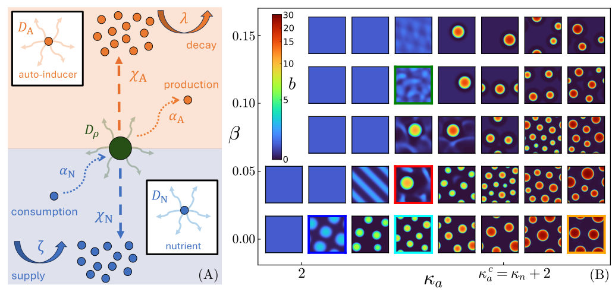
<figcaption class="paper-figure-caption"><b>Fig 1.</b> FIG. 1. Illustration of the model dynamics and emerging patterns. (A) Schematic of the model dynamics. (B) Overview of emerging patterns. Numerical simulations of the model [cf. Eq. (1)] with periodic boundary conditions starting from the homogeneous steady state with small fluctuations reveal a wide range of patterns, including traveling waves, hexagonal arrays of spots, various types of coarsening as well as coexistence of the traveling spots and waves. The control parameters set the response of particles to autoinducers (κa) and the inverse timescale of the nutrient dynamics (β). Simulation parameters for the non-dimensionalized model Eq. (1): κn = 14, δn = 0.75, δa = 2 (see main text...</figcaption>
</figure>
<figure class="paper-figure-card">
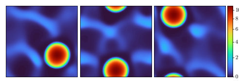
<figcaption class="paper-figure-caption"><b>Fig 2.</b> FIG. 2. Multi-scale pattern showing an exceptional instabil- ity giving rise to coexistence: A locally formed high-density droplet of particles moves in a background of traveling bands of cells. Time increases from left to right. Simulation param- eters: κa = 5, κn = 14, δa = 2.5, δn = 0.75, β = 0.02, system size L = 50. See also Supplementary Video SV2 [49].</figcaption>
</figure>
<figure class="paper-figure-card">
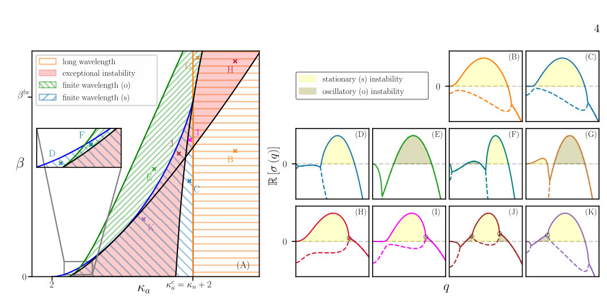
<figcaption class="paper-figure-caption"><b>Fig 3.</b> FIG. 3. Phase diagram and dispersion relations. (A) The (κa −β) phase diagram is shown for κn = 14, δn = 0.75, δa = 2.5. The white color correspond to regions where the system is linearly stable. (B-K) Dispersion curves corresponding to the points B-K in panel (A). The solid lines correspond to the leading (real part of) eigencurves and the dashed lines correspond to the second eigencurves plotted; they are plotted in their respective colors from panel (A). Stationary instabilities (yellow shading) arise when the leading eigencurve remains real and positive, while oscillatory instabilities (olive shading) arise for pairs of complex conjugate eigenvalues. The third eigencurves monotonically...</figcaption>
</figure>
<figure class="paper-figure-card">
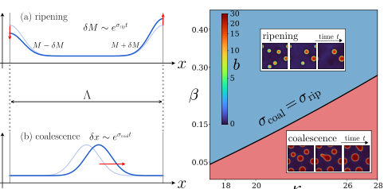
<figcaption class="paper-figure-caption"><b>Fig 4.</b> FIG. 4. Coalescence and ripening. Estimate of the transition line σcoal = σrip from singular perturbation theory. While the blue shaded region (σcoal &lt; σrip) is dominated by ripening patterns, the red shaded region (σcoal &gt; σrip) is dominated by coalescence patterns. The color bar is associated with the density b in snapshots of simulated patterns shown for (κa, β) values lying in the two predicted regions. See also Supplementary Video SV3 [49].</figcaption>
</figure>
</div>

<p><strong>Summary.</strong> This work analyzes a chemotaxis model where cell movement is governed by two competing chemical signals: an activator and an inhibitor. By performing linear stability analysis, the authors predict the existence of complex, multi-scale patterns, including oscillatory coarsening. This provides a detailed theoretical understanding of how competing local interactions drive collective behavior in active matter.</p>
<p><strong>Why it may be interesting.</strong> While focused on biological pattern formation, the mathematical framework of pattern selection, stability analysis, and non-equilibrium dynamics (like phase separation and coarsening) shares deep theoretical connections with non-equilibrium statistical mechanics models used in quantum many-body systems.</p>
<details>
<summary>Detailed structure</summary>
<p><strong>Main problem.</strong> The paper investigates how complex, multi-scale spatial patterns emerge from the interplay of two competing chemotactic interactions: an autoinducer activator and a nutrient inhibitor.</p>
<p><strong>Main result.</strong> The system exhibits diverse patterns, including traveling waves and a novel class of mixed multi-scale oscillatory coarsening, which are predicted by analyzing the stability boundaries in parameter space.</p>
<p><strong>Method.</strong> The analysis combines linear stability analysis (using dispersion relations) with singular perturbation theory to characterize different coarsening regimes (coalescence vs. ripening).</p>
<p><strong>Model / system.</strong> It uses a mass-conserving, three-component Keller-Segel model describing motile cell density coupled to autoinducer and nutrient concentrations.</p>
<p><strong>Key observables.</strong> Pattern types (traveling waves, hexagonal arrays, mixed oscillatory coarsening), growth rates ($\sigma_{rip}, \sigma_{coal}$), and stability boundaries in parameter space.</p>
<p><strong>Important parameters / regimes.</strong> Chemotactic coupling strengths ($\kappa_a, \kappa_n$), nutrient dynamics timescale ($eta$), and the ratio between these parameters.</p>
<p><strong>Assumptions / limitations.</strong> The analysis assumes mass conservation for particles and utilizes approximations like the volume-filling approximation for chemotactic sensitivity.</p>
<p><strong>Figures summary.</strong> Figures illustrate the schematic of model dynamics, the time evolution of the novel composite pattern, and phase diagrams summarizing instability regions in the $(\kappa_a - eta)$ parameter space.</p>
<p><strong>Paper structure.</strong> The paper progresses from defining the coupled model equations to performing linear stability analysis to find instability conditions, followed by detailed analysis of coarsening dynamics (ripening vs. coalescence) using potential theory.</p>
</details>
<details>
<summary>Abstract</summary>
<p>Classical chemotaxis models consider the directed motion of cells in response to a chemical gradient. Recent experiments suggest that biological microswimmers such as bacteria can perform chemotaxis toward multiple chemicals, which dynamically evolve depending on the distribution of the microswimmers. In this Letter, we consider a mass-conserving chemotaxis model in which pattern formation is driven by two competing chemicals, autoinducers and nutrients, where the former acts as an activator and the latter as an inhibitor for coarsening. We show that this can give rise to diverse patterns including long wavelength uninterrupted coarsening, Turing-like arrested coarsening, traveling waves as well as a novel class of mixed multi-scale oscillatory coarsening patterns, where a dense aggregate coexist with a dynamically spreading part of the population. We analytically derive the conditions for the onset of such patterns and discuss their physical implications, which significantly broadens our understanding of signaling active matter and pattern formation in general.</p>
</details>
<p><sub><a href="#top">↑ back to top</a></sub></p>

<p><a id="paper-2610.32315"></a></p>
<h3 id="fundamental-bound-on-wigner-negativity-generation-from-environmental-collisions"><a href="http://arxiv.org/abs/2610.32315v1">Fundamental bound on Wigner negativity generation from environmental collisions</a></h3>
<p><strong>Authors:</strong> Isaac Layton, Takahiro Sagawa, Ken Funo<br>
<strong>Type:</strong> both · <strong>Category:</strong> other · <strong>PDF:</strong> <a href="https://arxiv.org/pdf/2610.32315v1">https://arxiv.org/pdf/2610.32315v1</a><br>
<strong>Analysis basis:</strong> full PDF text, analyzed in chunks
<strong>Topic relevance:</strong> <code>driven-dissipative phase transition</code> <strong>2/5</strong> · <code>methods for driven-dissipative</code> <strong>2/5</strong> · <code>quantum measurements</code> <strong>2/5</strong> · <code>Keldysh / 2PI / non-Gaussian methods</code> <strong>1/5</strong> · <code>correlated / nonlocal dissipation</code> <strong>1/5</strong></p>
<div class="figure-strip-hint">↔ Scroll figures horizontally</div>
<div class="paper-figures-scroll">
<figure class="paper-figure-card">
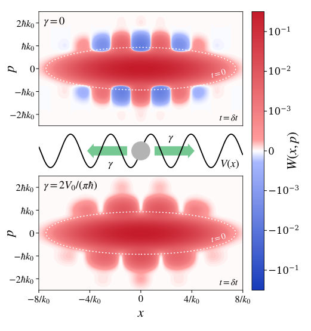
<figcaption class="paper-figure-caption"><b>Fig 1.</b> FIG. 1. Numerical simulation of the Wigner function of a quantum particle in a sinusoidal potential undergoing envi- ronmental collisions. (Top) The Wigner function at short time δt for an initially momentum squeezed Gaussian state when the collision rate γ = 0. (Bottom) The Wigner func- tion at the same time at the critical collision rate γ = 2V0/πℏ guaranteeing Wigner positivity. The potential has wavenum- ber 2k0 and amplitude 2V0/π, and the environmental colli- sions cause momentum jumps ±ℏk0.</figcaption>
</figure>
<figure class="paper-figure-card">
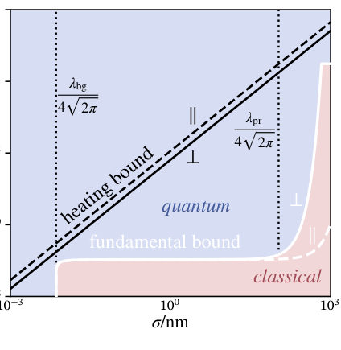
<figcaption class="paper-figure-caption"><b>Fig 2.</b> FIG. 2. Minimum integrated potential strength V as a func- tion of external potential width σ for Wigner negativity in an optical tweezer using the fundamental bound (8) and the heating bound (17). The solid (dashed) lines denote motion perpendicular (parallel) to the laser direction and are labelled ⊥( ∥). The fundamental bound divides the shaded quan- tum and classical regions. The de Broglie wavelength of the gas and photon wavelength are marked vertically (rescaled by 4 √</figcaption>
</figure>
</div>

<p><strong>Summary.</strong> This paper derives a fundamental mathematical bound that dictates when quantum evolution, subjected to environmental collisions, remains classically describable (Wigner positive). By analyzing the violation of this bound, the authors predict the generation of Wigner negativity, providing a testable signature of non-classical behavior in systems like trapped nanoparticles.</p>
<p><strong>Why it may be interesting.</strong> This work provides a rigorous, quantitative criterion (the fundamental bound) for when quantum dynamics can be accurately mapped onto classical stochastic processes, which is crucial for interpreting experiments involving environmental coupling.</p>
<details>
<summary>Detailed structure</summary>
<p><strong>Main problem.</strong> To establish an exact condition for the emergence of classical evolution laws from quantum theory when environmental interactions occur via collisions, moving beyond standard decoherence models.</p>
<p><strong>Main result.</strong> The emergence of classicality is governed by a fundamental bound relating the environmental momentum kick distribution to the Fourier transform of the potential; violating this bound generates Wigner negativity.</p>
<p><strong>Method.</strong> The analysis uses the Wigner representation to track quantum evolution under Markovian open system dynamics, deriving necessary and sufficient conditions via mathematical bounds.</p>
<p><strong>Model / system.</strong> The system is a single quantum particle in a potential $V(x)$, modeled by a master equation incorporating both Gaussian (diffusive) and Poisson (collisional) noise terms. Applications include levitated nanoparticles in optical tweezers.</p>
<p><strong>Key observables.</strong> Wigner Negativity, Heating Rate ($\dot{Q}$), Momentum Kick Distribution ($\gamma(k)$), Squeezing Level ($\sigma_p/\hbar k_0$).</p>
<p><strong>Important parameters / regimes.</strong> Collision rates ($\gamma_{pr}, \gamma_{bg}$), Potential strength ($V_0$), Characteristic frequencies ($\omega, k_0$).</p>
<p><strong>Assumptions / limitations.</strong> Markovian open system dynamics are assumed; the analysis often neglects certain scattering effects or assumes specific forms for the environmental interaction.</p>
<p><strong>Figures summary.</strong> Figure 1 numerically simulates Wigner function evolution for a particle in a sinusoidal potential, comparing the case with no collisions to the critical collision rate that maintains Wigner positivity. Figure 2 compares required potential strengths against fundamental and heating bounds.</p>
<p><strong>Paper structure.</strong> The paper develops the theoretical bound relating $\gamma(k)$ to $V^\circ(x)$, applies this to derive bounds on the heating rate ($\dot{Q}$), and then calculates these bounds and squeezing levels for specific physical systems like trapped nanoparticles.</p>
</details>
<details>
<summary>Abstract</summary>
<p>Beyond quadratic potentials, classical evolution laws are typically thought to arise from quantum theory as an approximate description. Here we show that classical evolution laws can emerge exactly, provided the environment interacts with the system via collisions. We use this to derive an inequality that lower bounds the distribution of environmental momentum kicks by the absolute value of the Fourier transform of the potential. We show that violating this inequality is necessary and sufficient for a non-quadratic potential to generate negativity from the set of positive Wigner functions. A simple consequence of this is a lower bound on the heating rate for a quantum system to evolve effectively classically. We illustrate our results using the theory of a levitated nanoparticle subject to photon recoil and background gas collisions. We derive the strength of external potential needed to generate Wigner negative states in an optical tweezer and propose an experimental test of whether a nanoparticle in an optical lattice is operating in a non-classical regime.</p>
</details>
<p><sub><a href="#top">↑ back to top</a></sub></p>

<p><a id="paper-2610.32743"></a></p>
<h3 id="first-and-second-order-electron-position-correlators-reveal-topological-phase-transitions"><a href="http://arxiv.org/abs/2610.32743v1">First- and Second-Order Electron Position Correlators Reveal Topological Phase Transitions</a></h3>
<p><strong>Authors:</strong> Antimo Marrazzo, Christian Loer Llemit, Massimo Capone<br>
<strong>Type:</strong> theory · <strong>Category:</strong> statistical mechanics · <strong>PDF:</strong> <a href="https://arxiv.org/pdf/2610.32743v1">https://arxiv.org/pdf/2610.32743v1</a><br>
<strong>Analysis basis:</strong> full PDF text, analyzed in chunks
<strong>Topic relevance:</strong> <code>analog quantum simulation</code> <strong>2/5</strong> · <code>Keldysh / 2PI / non-Gaussian methods</code> <strong>1/5</strong> · <code>driven-dissipative phase transition</code> <strong>1/5</strong> · <code>non-equilibrium universality</code> <strong>1/5</strong></p>
<div class="figure-strip-hint">↔ Scroll figures horizontally</div>
<div class="paper-figures-scroll">
<figure class="paper-figure-card">
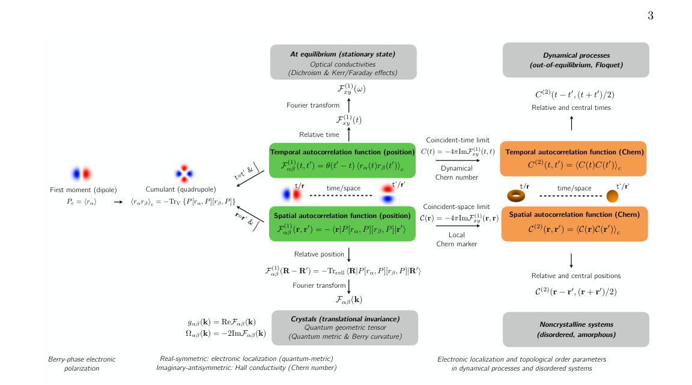
<figcaption class="paper-figure-caption"><b>Fig 1.</b> FIG. 1. Overview of the theoretical framework. While Berry-phase polarization is related to the first moment, or dipole, of the position operator, the second cumulant is related to the quantum geometric tensor and captures both electron localization, through the quantum metric, and nontrivial topology, through the Chern number. This cumulant can be interpreted as the integrated equal-time or equal-space limit of temporal and spatial autocorrelation functions of the position operator (F(1) αβ ). In equilibrium or translationally invariant settings, these correlators reduce to one-variable functions that can be analysed in the corresponding dual spaces, namely frequency and momentum. In the...</figcaption>
</figure>
<figure class="paper-figure-card">
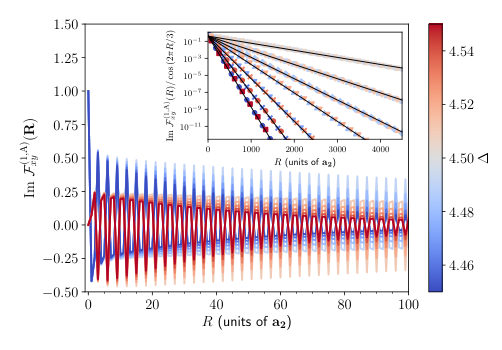
<figcaption class="paper-figure-caption"><b>Fig 2.</b> FIG. 2. Im F(1,A) xy (R) in the pristine Haldane model for rep- resentative topological (blue) and trivial (red) phases, shown in units of −Ac/4π. At the origin, the correlator repro- duces the Chern number, whereas at finite distances it de- cays to zero (see inset) according to the asymptotic form Im F(1,A) xy (r) ∝sgn(m) cos(kσ · r)e−|m|r/vF , where the Dirac fermion mass m = ∆−∆c measures the distance from the critical point, with ∆c = 4.5 for the parameters considered here. The oscillations have a period of three unit cells, set by the momentum of K′ at which the gap closes.</figcaption>
</figure>
<figure class="paper-figure-card">
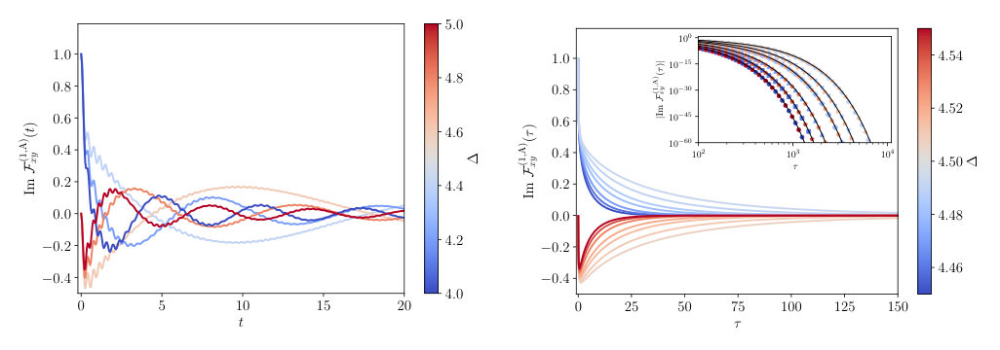
<figcaption class="paper-figure-caption"><b>Fig 3.</b> FIG. 3. Imaginary part of F(1,A) xy for the Haldane model near the topological phase transition (TPT) for different values of the on-site term ∆, shown in real time (left) and imaginary time (right). At t = τ = 0, Im F(1,A) xy equals the Chern number, in units of −Ac/4π. In real time, F(1,A) xy oscillates around zero, whereas in imaginary time it rapidly decays to zero. Close to the TPT, the imaginary-time decay acquires a power-law prefactor, F(1,A) xy (τ) ∼sign(m) e−2|m|τ</figcaption>
</figure>
<figure class="paper-figure-card">
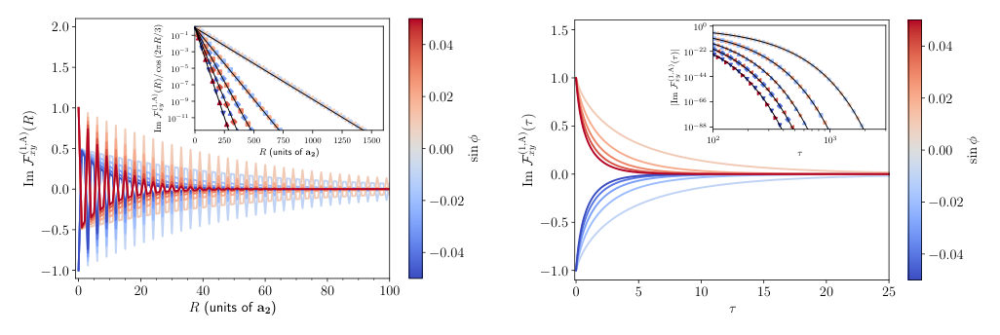
<figcaption class="paper-figure-caption"><b>Fig 4.</b> FIG. 4. Numerical results for the pristine Haldane model across the topological transitions from C = −1 to C = 1, showing Im F(1,A) xy (R) (left-hand panel) and Im F(1,A) xy (τ) (right-hand panels). The insets demonstrate the agreement between the numerical results and the analytical predictions for the asymptotic behavior.</figcaption>
</figure>
<figure class="paper-figure-card">
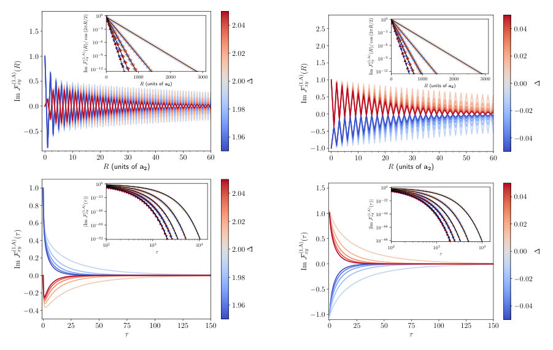
<figcaption class="paper-figure-caption"><b>Fig 5.</b> FIG. 5. Numerical results for the pristine QWZ model, showing Im F(1,A) xy (R) (upper panels) and Im F(1,A) xy (τ) (lower panels). The left-hand panels correspond to the transition from C = 1 to C = 0, whereas the right-hand panels show the transition from C = −1 to C = 1, upon increasing ∆. The insets demonstrate the agreement between the numerical results and the analytical predictions for the asymptotic behaviour.</figcaption>
</figure>
</div>

<p><strong>Summary.</strong> This work develops a general framework to characterize topological phase transitions using electron position correlation functions, moving beyond traditional critical phenomena theory. By analyzing the antisymmetric components of these correlators, the authors show that the Chern number is recovered in specific limits, and the critical behavior near TPTs is governed by the decay of these correlators. This provides a robust, correlator-based diagnostic tool for diverse quantum systems.</p>
<p><strong>Why it may be interesting.</strong> The use of correlation functions to diagnose topological transitions provides a powerful, general diagnostic tool that moves beyond simple gap-closing criteria, which is relevant for understanding non-equilibrium or complex many-body dynamics.</p>
<details>
<summary>Detailed structure</summary>
<p><strong>Main problem.</strong> The paper aims to characterize topological phase transitions (TPTs) using fluctuations and correlation functions, extending the standard theory of critical phenomena.</p>
<p><strong>Main result.</strong> It establishes a general correlator-based description for TPTs applicable across various physical regimes (crystalline, noncrystalline, equilibrium, and dynamical).</p>
<p><strong>Method.</strong> The analysis focuses on the antisymmetric part of the electron position-position correlation function, which yields the Chern number in specific limits, and introduces higher-order Chern-Chern correlators for general cases.</p>
<p><strong>Model / system.</strong> The theory is applied to condensed matter systems, using the Haldane and Qi-Wu-Zhang (QWZ) models as examples to study the transition between topological and trivial phases.</p>
<p><strong>Key observables.</strong> Position-position correlation functions ($F^{(1)}$ and $F^{(2)}$), the Chern number, and higher-order Chern-Chern correlators.</p>
<p><strong>Important parameters / regimes.</strong> The distance from the critical point, quantified by the Dirac fermion mass ($m = \Delta - \Delta_c$), and system parameters like the on-site term $\Delta$.</p>
<p><strong>Assumptions / limitations.</strong> The framework relies on defining appropriate limits (equal-time, equal-space, coincident-point) for the position correlators, and sometimes neglects vertex corrections in interacting systems.</p>
<p><strong>Figures summary.</strong> Figures illustrate the imaginary part of the position correlator ($    ext{Im } F^{(1,A)}$) for the Haldane and QWZ models across TPTs, showing characteristic exponential decays governed by the Dirac mass.</p>
<p><strong>Paper structure.</strong> The paper develops the theory by first introducing the position correlators, showing how the antisymmetric part yields the Chern number. It then analyzes the asymptotic behavior of these correlators in both real and imaginary time/space to characterize the critical divergence near TPTs, generalizing the description to higher-order correlators.</p>
</details>
<details>
<summary>Abstract</summary>
<p>The theory of conventional critical phenomena is built around the concepts of fluctuations and correlators of local observables. Here, we show that topological phase transitions can also be characterized through spatial and temporal two-point correlation functions associated with fluctuations of the electronic position operator. The key object is the antisymmetric part of the position-position correlation function, which yields the Chern number in the equal-time and equal-space limit. When the system is translationally invariant in space or time (the latter case corresponding to an equilibrium condition), these two-point correlators reduce to one-variable functions of the remaining variable. Remarkably, these functions are both reminiscent of critical behaviour, including divergent correlation times and lengths signalling the phase transitions. Away from these conditions, namely in non-periodic systems or genuinely dynamical processes, criticality is instead better captured by higher-order Chern-Chern correlators constructed from local or dynamical markers obtained as coincident-point limits of the position correlators. These higher-order Chern-Chern correlators can be seen as double Levi-Civita contractions of second-order position correlators, selecting the antisymmetric sector in each index pair. We substantiate this framework through numerical simulations and analytic calculations. Our results establish a general correlator-based description of topological phase transitions, applicable to crystalline, noncrystalline, equilibrium, and dynamical systems.</p>
</details>
<p><sub><a href="#top">↑ back to top</a></sub></p>

<p><a id="paper-2610.32014"></a></p>
<h3 id="additive-uncertainty-relations-via-pseudospectral-methods"><a href="http://arxiv.org/abs/2610.32014v1">Additive uncertainty relations via pseudospectral methods</a></h3>
<p><strong>Authors:</strong> Alexander Cerjan, Lara Ismert, Terry A. Loring<br>
<strong>Type:</strong> theory · <strong>Category:</strong> other · <strong>PDF:</strong> <a href="https://arxiv.org/pdf/2610.32014v1">https://arxiv.org/pdf/2610.32014v1</a><br>
<strong>Analysis basis:</strong> full PDF text, analyzed in chunks
<strong>Topic relevance:</strong> <code>analog quantum simulation</code> <strong>2/5</strong> · <code>Keldysh / 2PI / non-Gaussian methods</code> <strong>1/5</strong> · <code>quantum measurements</code> <strong>1/5</strong></p>
<div class="figure-strip-hint">↔ Scroll figures horizontally</div>
<div class="paper-figures-scroll">
<figure class="paper-figure-card">
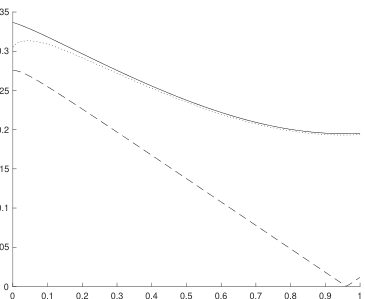
<figcaption class="paper-figure-caption"><b>Fig 1.</b> Figure 7.1. This figure shows data from a Chern insulator of size L = 30. The left panel shows the quadratic gap as a solid line, the Clifford gap as a dashed line, and the lower-bound on the quadratic gap as in (34) using alternating dashes and dots. The right panel also shows the quadratic gap and compares this to the square-root of the sum of variances (dashed line).</figcaption>
</figure>
<figure class="paper-figure-card">
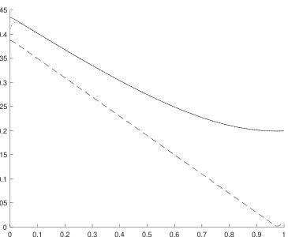
<figcaption class="paper-figure-caption"><b>Fig 2.</b> Figure 7.2. Same Chern insulator and plots as in Figure 7.1 but now with L = 40. The left panel shows the quadratic gap as a solid line, the Clifford gap as a dashed line, and the lower-bound on the quadratic gap as in (34) using alternating dashes and dots. The right panel also shows the quadratic gap and compares this to the square-root of the sum of variances (dashed line).</figcaption>
</figure>
<figure class="paper-figure-card">
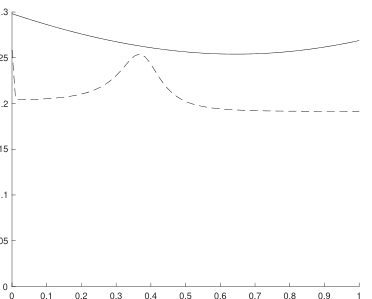
<figcaption class="paper-figure-caption"><b>Fig 3.</b> Figure 7.3. This figure shows data from a 4D, class A topological insulator of size L = 5. The left panel shows the quadratic gap as a solid line, the Clifford gap as a dashed line, and the lower-bound on the quadratic gap as in (35) using alternating dashes and dots. The right panel also shows the quadratic gap and compares this to the square-root of the sum of variances (dashed line).</figcaption>
</figure>
<figure class="paper-figure-card">
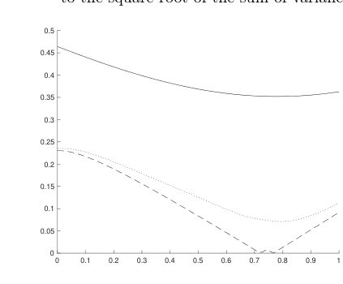
<figcaption class="paper-figure-caption"><b>Fig 4.</b> Figure 7.4. This is the same as shown in Figure 7.3, but now L = 8.</figcaption>
</figure>
</div>

<p><strong>Summary.</strong> This paper develops a generalized, additive uncertainty relation for multiple quantum observables using advanced spectral techniques involving pseudospectra. It provides a lower bound on the sum of variances based on the commutators and the smallest singular value of associated operators. This method is highly relevant for characterizing localization and spectral properties in complex quantum systems, such as topological insulators.</p>
<p><strong>Why it may be interesting.</strong> The rigorous extension of uncertainty principles to sums of variances using spectral methods provides powerful, state-independent bounds useful for characterizing quantum localization and entanglement in complex many-body systems.</p>
<details>
<summary>Detailed structure</summary>
<p><strong>Main problem.</strong> The paper derives general lower bounds for the sum of variances of multiple Hermitian observables, extending standard uncertainty relations to an additive form.</p>
<p><strong>Main result.</strong> A general lower bound for the sum of variances of $d$ observables is established using the Clifford pseudospectrum, relating it to the sum of commutators and the smallest singular value of associated localizers.</p>
<p><strong>Method.</strong> The authors employ advanced mathematical tools involving $C^*$-algebras, pseudospectra (Clifford and quadratic), and spectral localizers to derive inequalities for the sum of variances.</p>
<p><strong>Model / system.</strong> The framework is general, dealing with Hermitian observables in a $C^*$-algebra, but is applied to physical contexts like Chern insulators and systems involving Dirac-type Hamiltonians.</p>
<p><strong>Key observables.</strong> Variances ($\Delta^2$), Commutators ($\langle i[A_j, A_k] 
angle$), Clifford pseudospectra ($\mu_C$), and Quadratic pseudospectra ($\mu_Q$).</p>
<p><strong>Important parameters / regimes.</strong> The number of observables ($d$), the spectral gap ($\mu$), and the localization parameter $\epsilon$.</p>
<p><strong>Assumptions / limitations.</strong> The analysis relies on the properties of $C^*$-algebras and the existence of appropriate Clifford representations for the generators.</p>
<p><strong>Figures summary.</strong> Figures compare the calculated quadratic gap, Clifford gap, and the derived lower bound for systems like Chern insulators, showing agreement near topological boundaries.</p>
<p><strong>Paper structure.</strong> The paper progresses from establishing the general mathematical framework using pseudospectra to deriving the additive uncertainty relation, and then applies this framework to specific physical models like topological insulators.</p>
</details>
<details>
<summary>Abstract</summary>
<p>Given Hermitian observable $A$, the variance of $A$ is given by the difference of expectations $\langle A^2\rangle - \langle A\rangle^2$, where the expectation of an observable implicitly assumes a choice of state for the underlying system. As a sub-case of a general lower bound for the sum of variances for finitely many arbitrary elements in a $C^*$-algebra, we prove that the sum of the variances for $d$ observables $A_1, \dots , A_d$ is greater than some expression in the expectations $\langle i[A_j,A_k]\rangle$ for $j\neq k$ plus the square of the smallest singular value of the associated localizer. In special cases, this expression is just a root mean square average. Our technique also derives a general containment between the Clifford pseudospectra and quadratic pseudospectra for $d$ observables.</p>
</details>
<p><sub><a href="#top">↑ back to top</a></sub></p>

<p><a id="paper-2610.32812"></a></p>
<h3 id="exploiting-the-weyl-chamber-structure-for-hardware-aware-quantum-circuit-compression"><a href="http://arxiv.org/abs/2610.32812v1">Exploiting the Weyl-Chamber Structure for Hardware-Aware Quantum Circuit Compression</a></h3>
<p><strong>Authors:</strong> Neel Misciasci, Isabel Nha Minh Le, Christian B. Mendl<br>
<strong>Type:</strong> theory · <strong>Category:</strong> numerical methods · <strong>PDF:</strong> <a href="https://arxiv.org/pdf/2610.32812v1">https://arxiv.org/pdf/2610.32812v1</a><br>
<strong>Analysis basis:</strong> full PDF text, analyzed in chunks
<strong>Topic relevance:</strong> <code>analog quantum simulation</code> <strong>2/5</strong> · <code>methods for driven-dissipative</code> <strong>2/5</strong></p>
<div class="figure-strip-hint">↔ Scroll figures horizontally</div>
<div class="paper-figures-scroll">
<figure class="paper-figure-card">
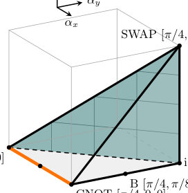
<figcaption class="paper-figure-caption"><b>Fig 1.</b> FIG. 1: Geometric representation of the Weyl chamber for two-qubit local equivalence classes. The chamber forms a tetrahedron within the reduced bounding region π/4 ≥αx ≥αy ≥αz ≥0. Distinct high-symmetry operating points correspond to core quantum gates: Identity (I), CNOT, iSWAP, and SWAP define the tetrahedral vertices, while the B gate is positioned strictly on the base edge directly between CNOT and iSWAP. The native gate families used in this work are highlighted: RZZ(θ) gates lie on the I–CNOT edge (orange), whereas fSim(θ, ϕ) gates covers the face αx = αy (I–iSWAP–SWAP) (teal).</figcaption>
</figure>
<figure class="paper-figure-card">
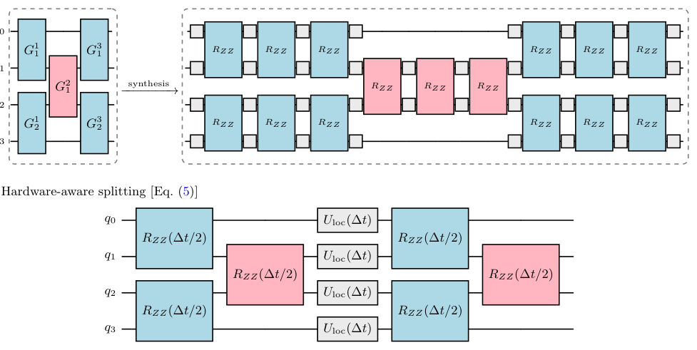
<figcaption class="paper-figure-caption"><b>Fig 2.</b> FIG. 2: One repetition of second-order Trotterization under the two splittings (Ising case). Blue and pink boxes act on even and odd bonds, respectively; grey boxes are single-qubit gates. (a) With the splitting used for Riemannian optimization [Eq. (4)], each generic two-qubit gate G ∈SU(4) must be synthesized into the native gate set, here three RZZ gates interleaved with single-qubit rotations; adjacent single-qubit rotations are merged. This triples the two-qubit gate depth. (b) With the hardware-aware splitting [Eq. (5)], the Trotter step is implemented directly with native gates, yielding a shallower circuit.</figcaption>
</figure>
<figure class="paper-figure-card">
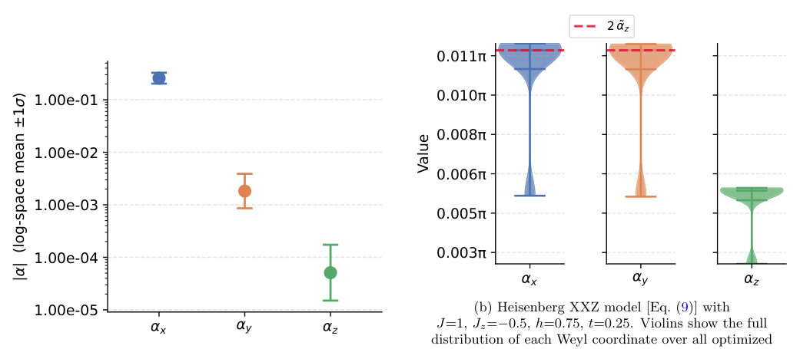
<figcaption class="paper-figure-caption"><b>Fig 3.</b> FIG. 3: Weyl-chamber coordinates (αx, αy, αz) distribution of the RO-optimized two-qubit gates for N=50 sites, extracted via the KAK decomposition, for two Trotterized target Hamiltonians. Both circuits use the same initial ansatz: 7 repetitions of a second-order Trotter product formula. The gate content reflects the symmetry of the underlying Hamiltonian: Ising optimization converges to near-RZZ gates (a), while Heisenberg XXZ optimization converges to near-fSim gates (b).</figcaption>
</figure>
<figure class="paper-figure-card">
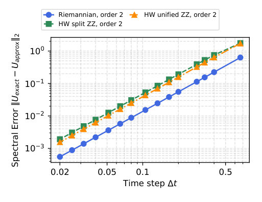
<figcaption class="paper-figure-caption"><b>Fig 4.</b> FIG. 4: Estimated spectral error for different Trotter splittings as a function of the time step δ (N = 10, t = 2). Blue: splitting used for RO (Eq. (4)). Yellow and green: splittings available to PO (Eq. (6) and Eq. (5), respectively). All lines share the same slope; the offset between them grows linearly with system size and interaction strength, reflecting the number of non-commuting terms introduced by each splitting.</figcaption>
</figure>
<figure class="paper-figure-card">
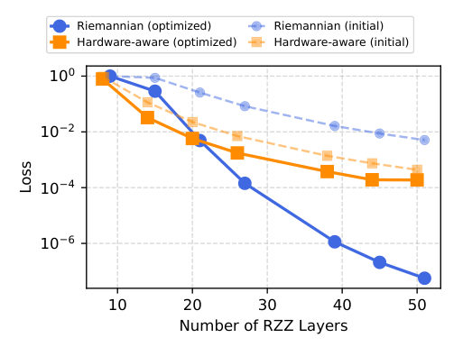
<figcaption class="paper-figure-caption"><b>Fig 5.</b> FIG. 6: Loss as a function of native entangling-gate depth for the Ising model, N = 50. RO is compared with PO. Solid lines show results after optimization; dashed lines show the corresponding initial Trotter circuits before optimization. Lower loss indicates a more accurate approximation of the reference time evolution.</figcaption>
</figure>
</div>

<p><strong>Summary.</strong> This work compares two methods for compressing quantum circuits simulating many-body physics: optimizing over all possible gates versus restricting optimization to the hardware's native gate set. By analyzing the underlying mathematical structure (Weyl coordinates) and the computational cost (tensor network contraction), the authors show that hardware-aware optimization can achieve superior efficiency by exploiting the physical symmetries of the system.</p>
<p><strong>Why it may be interesting.</strong> It provides concrete, computationally rigorous guidelines for mapping complex quantum dynamics onto restricted, hardware-native gate sets, which is crucial for practical quantum simulation.</p>
<details>
<summary>Detailed structure</summary>
<p><strong>Main problem.</strong> The paper addresses the challenge of efficiently compressing quantum circuits for long-time simulation of many-body dynamics on near-term quantum hardware.</p>
<p><strong>Main result.</strong> It demonstrates that while generic optimization (RO) is powerful, optimizing directly over native hardware gates (PO) can yield a more efficient compressed circuit, especially when the underlying physics (like the Heisenberg XXZ model) has a natural structure.</p>
<p><strong>Method.</strong> The authors compare two optimization strategies—Riemannian Optimization (RO) over generic unitaries versus Hardware-aware Parameterized Optimization (PO) restricted to native gates—using tensor network techniques for gradient calculation and loss evaluation.</p>
<p><strong>Model / system.</strong> The study focuses on simulating time evolution for quantum many-body systems, specifically the Ising and Heisenberg XXZ models, using Trotterization-type circuit ansätze.</p>
<p><strong>Key observables.</strong> Approximation loss (L) compared to the reference unitary, circuit depth, and the characterization of optimized gates using Weyl-Chamber coordinates.</p>
<p><strong>Important parameters / regimes.</strong> The bond dimension ($\chi$) of the environment in the tensor network contraction, and the degree of freedom (DOF) budget for the ansatz.</p>
<p><strong>Assumptions / limitations.</strong> The analysis assumes that single-qubit Z rotations required for gate equivalence are implemented at zero cost in the target hardware.</p>
<p><strong>Figures summary.</strong> Figures illustrate the geometric structure of the Weyl chamber, compare circuit depths for Ising evolution using RO vs. PO, and detail the tensor network contraction schemes for two-qubit and single-qubit gates.</p>
<p><strong>Paper structure.</strong> The paper first establishes the problem of circuit compression, then details the mathematical framework using Weyl coordinates and tensor networks. It proceeds to compare RO and PO methods on specific Hamiltonians (Ising/XXZ), culminating in a detailed cost analysis of the tensor network contractions for both approaches.</p>
</details>
<details>
<summary>Abstract</summary>
<p>Quantum circuit compression based on tensor networks enables long-time simulation of quantum many-body dynamics on near-term hardware. While Riemannian optimization has been successfully employed for this purpose, it typically optimizes over the manifold of generic two-qubit unitaries. Consequently, the resulting gates must still be synthesized into the hardware's native gate set via KAK decomposition, an overhead that partially negates the original compression gain. We show that Riemannian-optimized gates already exhibit a predictable Weyl structure: near-$R_{ZZ}$ for the Ising model and near-fSim for the Heisenberg XXZ model. Building on this insight, we investigate whether parameterized optimization directly over the native gate set can offer a beneficial trade-off between expressivity and circuit efficiency by reducing the circuit's dimensionality. When comparing the two approaches, we find that the small residual Weyl parameters neglected by the latter are essential for high compression of the Ising propagator, whereas for the Heisenberg propagator, the native XXZ structure can be exploited directly to build a more efficient compressed circuit.</p>
</details>
<p><sub><a href="#top">↑ back to top</a></sub></p>

<p><a id="paper-2610.32973"></a></p>
<h3 id="ideal-interaction-dynamics-of-defects-and-background-fields-in-condensed-matter"><a href="http://arxiv.org/abs/2610.32973v1">Ideal interaction dynamics of defects and background fields in condensed matter</a></h3>
<p><strong>Authors:</strong> François Gay-Balmaz, Tudor S. Ratiu, Cesare Tronci<br>
<strong>Type:</strong> theory · <strong>Category:</strong> other · <strong>PDF:</strong> <a href="https://arxiv.org/pdf/2610.32973v1">https://arxiv.org/pdf/2610.32973v1</a><br>
<strong>Analysis basis:</strong> full PDF text, analyzed in chunks
<strong>Topic relevance:</strong> <code>Keldysh / 2PI / non-Gaussian methods</code> <strong>2/5</strong> · <code>analog quantum simulation</code> <strong>2/5</strong></p>
<div class="figure-strip-hint">↔ Scroll figures horizontally</div>
<div class="paper-figures-scroll">
<figure class="paper-figure-card">
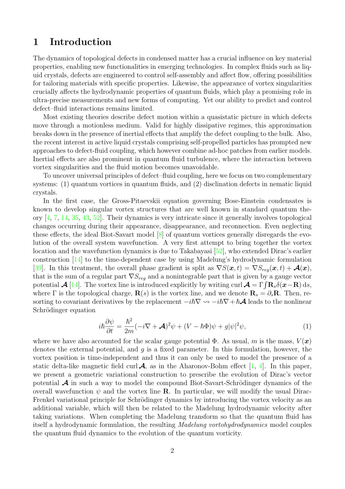
<figcaption class="paper-figure-caption"><b>Fig 1.</b> Low-resolution page preview, page 2</figcaption>
</figure>
<figure class="paper-figure-card">
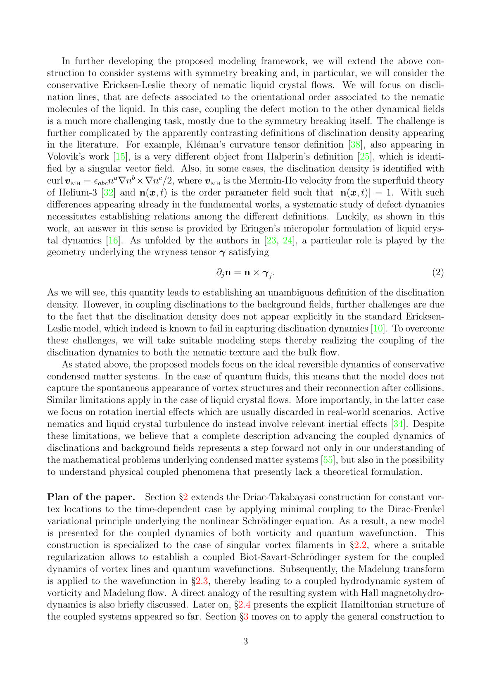
<figcaption class="paper-figure-caption"><b>Fig 2.</b> Low-resolution page preview, page 3</figcaption>
</figure>
<figure class="paper-figure-card">
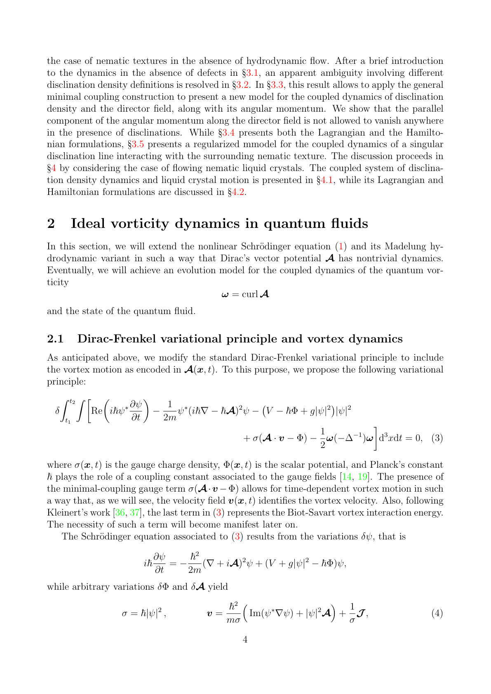
<figcaption class="paper-figure-caption"><b>Fig 3.</b> Low-resolution page preview, page 4</figcaption>
</figure>
<figure class="paper-figure-card">
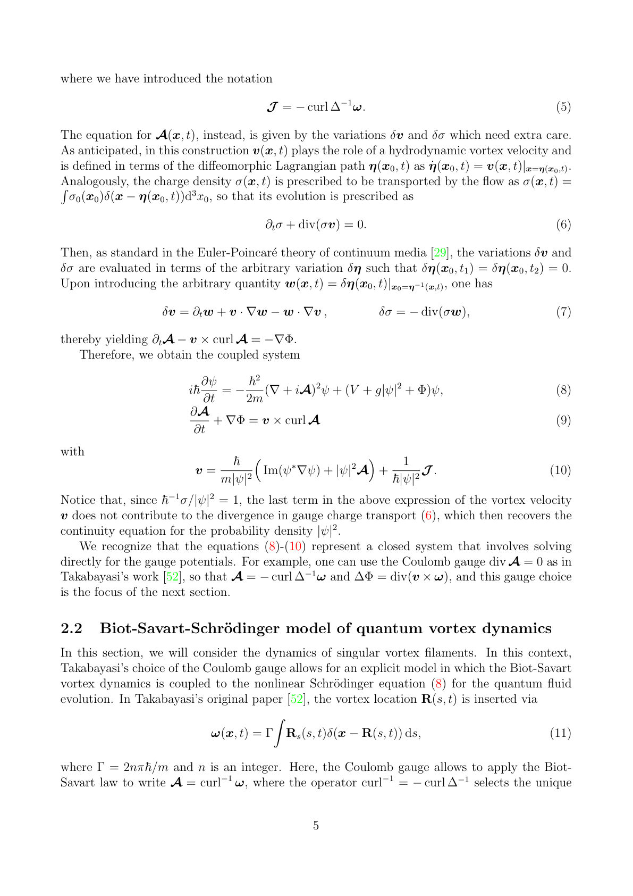
<figcaption class="paper-figure-caption"><b>Fig 4.</b> Low-resolution page preview, page 5</figcaption>
</figure>
<figure class="paper-figure-card">
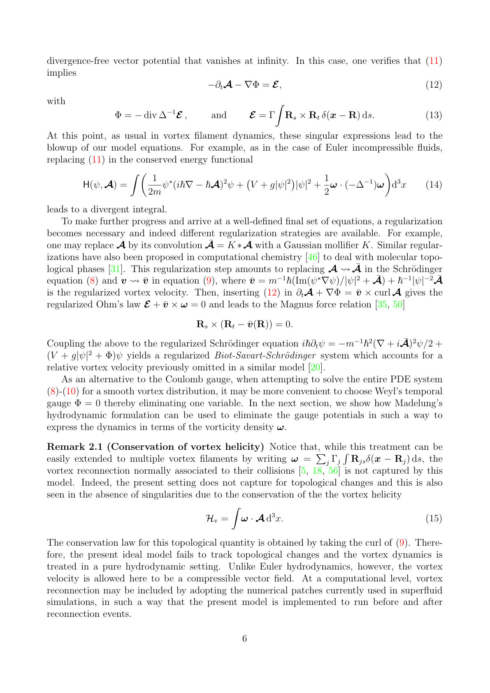
<figcaption class="paper-figure-caption"><b>Fig 5.</b> Low-resolution page preview, page 6</figcaption>
</figure>
</div>

<p><strong>Summary.</strong> This paper develops a unified theoretical framework to model the coupled, conservative dynamics between topological defects (vortices/disclinations) and the background fields in systems like quantum fluids and liquid crystals. By merging the Euler-Poincaré approach with gauge theory, the authors derive coupled equations that govern the interaction, providing key insights into conserved quantities like helicity.</p>
<p><strong>Why it may be interesting.</strong> This work is highly relevant as it provides a rigorous mathematical framework for understanding how topological defects fundamentally alter the dynamics of quantum fields, bridging concepts from fluid dynamics, gauge theory, and quantum many-body physics.</p>
<details>
<summary>Detailed structure</summary>
<p><strong>Main problem.</strong> The core challenge is developing a unified, conservative dynamical model that accurately describes the coupled evolution between topological defects (like vortices and disclinations) and the background fields in condensed matter systems.</p>
<p><strong>Main result.</strong> The authors propose a framework combining the Euler-Poincaré variational setting with gauge theory, yielding a coupled system that predicts specific conserved quantities, such as hydrodynamic helicity, for ideal dynamics.</p>
<p><strong>Method.</strong> The methodology involves combining advanced mathematical tools—specifically the Euler-Poincaré formalism and gauge theory—to derive coupled equations of motion for both the field variables and the defect structures.</p>
<p><strong>Model / system.</strong> The study applies to two primary physical systems: quantum fluids (modeled via the Gross-Pitaevskii theory exhibiting vortices) and nematic liquid crystals (modeled using the Ericksen-Leslie framework exhibiting disclinations).</p>
<p><strong>Key observables.</strong> Vortex line evolution, disclination density, quantum vorticity, Madelung flow, and the angular momentum component along the director field.</p>
<p><strong>Important parameters / regimes.</strong> The model is restricted to ideal, reversible (conservative) dynamics, and the analysis often involves regularization techniques to handle singular defect filaments.</p>
<p><strong>Assumptions / limitations.</strong> The framework assumes ideal, non-dissipative dynamics and explicitly excludes the physics of defect reconnection or the inclusion of full inertial/dissipative effects.</p>
<p><strong>Figures summary.</strong> Not specified in the notes, but the structure suggests derivations of coupled equations (e.g., Biot-Savart-Schrödinger system, hydrodynamic equations) and the identification of conserved invariants.</p>
<p><strong>Paper structure.</strong> The paper is structured to first address quantum vortices ($\S 2$), then disclination dynamics in nematic textures ($\S 3$), and finally generalizing the framework to flowing nematic liquid crystals ($\S 4$).</p>
</details>
<details>
<summary>Abstract</summary>
<p>While defect dynamics in condensed matter systems is widely studied and several methods are available to track the defect position over time, the formulation of dynamical models for the coupled evolution of both defect and background field quantities seems to be more challenging. Yet, the overall behavior of a system containing moving defects is strongly influenced by this defect-field interaction. Here, we propose a modeling framework for the conservative coupled evolution of the defect density and the background fields upon focusing on two relevant cases of study: the Gross-Pitaevskii theory of quantum fluids and the Ericksen-Leslie model of nematic liquid crystals. To achieve the coupled evolution, we combine the Euler-Poincaré variational setting of continuum dynamics with the gauge theory of topological defects. While the latter allows us to overcome certain ambiguities in definition of the defect density, the Euler-Poincaré method provides a unified modeling approach in the absence of defect reconnection.</p>
</details>
<p><sub><a href="#top">↑ back to top</a></sub></p>

<p><a id="paper-2610.32378"></a></p>
<h3 id="low-temperature-hybrid-monte-carlo-for-perylene-and-corannulene-stabilizing-determinant-and-force"><a href="http://arxiv.org/abs/2610.32378v1">Low-Temperature Hybrid Monte Carlo for Perylene and Corannulene: Stabilizing Determinant and Force</a></h3>
<p><strong>Authors:</strong> Petar Sinilkov, Thomas Luu, Johann Ostmeyer, Finn L. Temmen, Marcel Rodekamp<br>
<strong>Type:</strong> theory · <strong>Category:</strong> strongly correlated electrons · <strong>PDF:</strong> <a href="https://arxiv.org/pdf/2610.32378v1">https://arxiv.org/pdf/2610.32378v1</a><br>
<strong>Analysis basis:</strong> full PDF text, analyzed in chunks
<strong>Topic relevance:</strong> <code>analog quantum simulation</code> <strong>2/5</strong> · <code>Keldysh / 2PI / non-Gaussian methods</code> <strong>1/5</strong> · <code>methods for driven-dissipative</code> <strong>1/5</strong></p>
<div class="figure-strip-hint">↔ Scroll figures horizontally</div>
<div class="paper-figures-scroll">
<figure class="paper-figure-card">
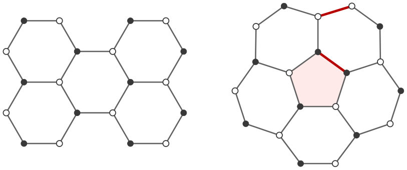
<figcaption class="paper-figure-caption"><b>Fig 1.</b> Figure 1: Tight-binding lattices of (a) perylene and (b) corannulene, one site per carbon 𝑝𝑧orbital, 𝑁𝑥= 20 each. Filled and open circles are the two sublattices of a two-coloring. It succeeds for perylene, which is bipartite. In corannulene the shaded pentagon and the fifteen-site perimeter are edge-disjoint odd cycles, so at least two bonds (red) must join sites of the same sublattice. Corannulene is shown in projection.</figcaption>
</figure>
<figure class="paper-figure-card">
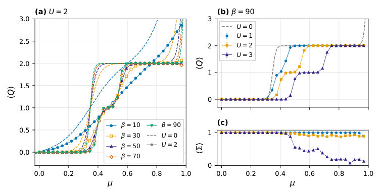
<figcaption class="paper-figure-caption"><b>Fig 2.</b> Figure 2: Average charge of perylene against chemical potential, at fixed step size 𝛿= 𝛽/𝑁𝑡≈0.18. (a) Temperature dependence at 𝑈= 2: interacting data (markers) for 𝛽= 10, 30, 50, 70 and 90, with the non-interacting result at each 𝛽(dashed). The smooth ramp of the warm ensembles sharpens into a step function as 𝛽grows. (b) Interaction dependence at 𝛽= 90: the Δ𝑄= 1 plateau appears only for 𝑈&gt; 0 and widens with 𝑈. (c) The corresponding average sign, which stays close to unity for 𝑈= 1 and 2 but collapses for 𝑈= 3.</figcaption>
</figure>
<figure class="paper-figure-card">
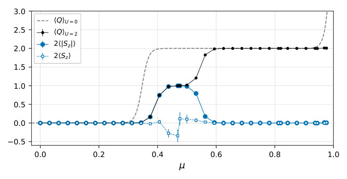
<figcaption class="paper-figure-caption"><b>Fig 3.</b> Figure 3: Spin structure of the 𝑄= 1 region of perylene at 𝑈= 2, 𝛽= 90, 𝑁𝑡= 512. Across the plateau 2 ⟨|𝑆𝑧|⟩rises to unity while 2 ⟨𝑆𝑧⟩stays consistent with zero, identifying the ground state as a spin doublet rather than a singlet. The charge at 𝑈= 2 and 𝑈= 0 is shown for reference.</figcaption>
</figure>
<figure class="paper-figure-card">
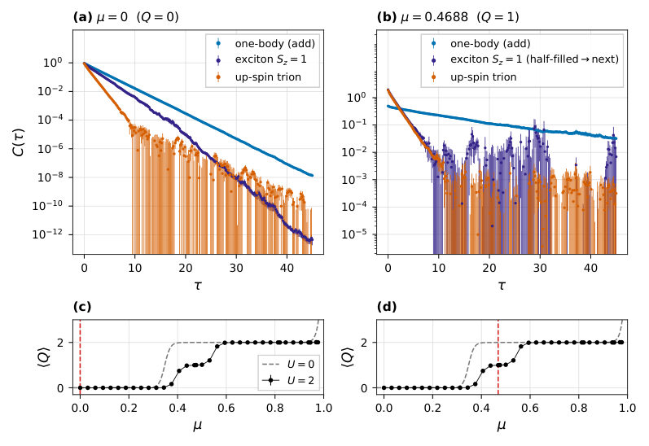
<figcaption class="paper-figure-caption"><b>Fig 4.</b> Figure 4: One-, two- and three-body correlation functions of perylene at 𝑈= 2, 𝛽= 90, 𝑁𝑡= 512: (a) at half filling and (b) in the middle of the 𝑄= 1 plateau, at 𝜇= 0.4688. Panels (c) and (d) mark the chemical potential of each set on the charge curve. At 𝜇= 0 the exciton promotes an electron across the gap; in the plateau it promotes the unpaired electron to the next level. The exciton curve, labelled 𝑆𝑧= 1, is the degenerate triplet partner 𝑐† 𝑘+,↑𝑐𝑙−,↓of (4).</figcaption>
</figure>
<figure class="paper-figure-card">
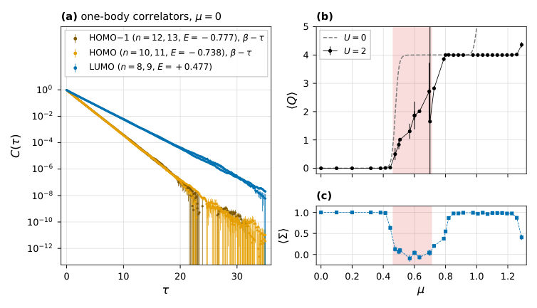
<figcaption class="paper-figure-caption"><b>Fig 5.</b> Figure 5: Corannulene at 𝑈= 2, 𝛽= 90, 𝑁𝑡= 512. (a) One-body correlation functions at 𝜇= 0, one color per degenerate pair of levels. For the empty LUMO the added electron propagates cleanly forward in 𝜏; for the filled HOMO and HOMO−1 the forward branch is Pauli-blocked, and the signal is the backward branch, where an electron is removed, plotted against 𝛽−𝜏. The slopes differ because the spectrum of the non-bipartite lattice is not symmetric about half filling. (b) Average charge and (c) average sign against chemical potential: the sign is unity at half filling and collapses exactly where the charge transition happens. Shading marks a severe sign problem, ⟨Σ⟩≤0.2.</figcaption>
</figure>
</div>

<p><strong>Summary.</strong> This work applies advanced Hybrid Monte Carlo simulations to study the electronic structure of PAHs like perylene using the Hubbard model. The authors report discovering an interaction-driven charge plateau and characterizing the spin state within it. The development of a stable simulation algorithm allows for the calculation of complex multi-body correlation functions at near-zero temperatures.</p>
<p><strong>Why it may be interesting.</strong> The study provides detailed insights into charge localization and correlation effects in extended $\pi$-electron systems, which are fundamental models for molecular electronics and charge transfer in condensed matter.</p>
<details>
<summary>Detailed structure</summary>
<p><strong>Main problem.</strong> The study investigates the electronic properties and charge transitions in polycyclic aromatic hydrocarbons (PAHs) like perylene and corannulene at low temperatures.</p>
<p><strong>Main result.</strong> The authors found an interaction-induced $\Delta Q=1$ plateau in perylene, which widens with interaction strength, and determined that the ground state in this plateau is a spin doublet, not a singlet.</p>
<p><strong>Method.</strong> The research employs Hybrid Monte Carlo (HMC) simulations, which feature an algorithmic advancement stabilizing determinant and force calculations to machine precision.</p>
<p><strong>Model / system.</strong> The system models Perylene and Corannulene using the Hubbard Hamiltonian, incorporating on-site repulsion ($U$) and chemical potential ($\mu$).</p>
<p><strong>Key observables.</strong> One-, two- (exciton), and three-body correlators; average charge ($\langle Q 
angle$) plateaus; average sign ($\langle \Sigma 
angle$); spin observables ($\langle|S_z|
angle$, $\langle S_z
angle$).</p>
<p><strong>Important parameters / regimes.</strong> Interaction strength ($U$), chemical potential ($\mu$), and inverse temperature ($eta$).</p>
<p><strong>Assumptions / limitations.</strong> The method relies on algorithmic advances to stabilize calculations at high inverse temperatures ($eta$), and the analysis notes potential limitations regarding the sign problem for Corannulene.</p>
<p><strong>Figures summary.</strong> Figures demonstrate the sharpening of charge transitions with increasing $eta$, the widening of the $\Delta Q=1$ plateau with $U$, and the spin state analysis confirming a doublet ground state in the $Q=1$ plateau.</p>
<p><strong>Paper structure.</strong> The paper systematically analyzes the charge dependence ($\langle Q 
angle$ vs $\mu$) across different interaction strengths ($U$) and temperatures ($eta$), calculating various correlation functions to characterize the electronic ground state.</p>
</details>
<details>
<summary>Abstract</summary>
<p>We demonstrate a real world physics study of the molecules perylene and corannulene at different doping levels, and calculating selected one-, two- (exciton) and three-body (trion) correlators. This has been done by performing Hubbard-model simulations near room temperature. We find, between charge neutral and doubly charged plateaus of perylene, an interaction-induced $ΔQ = 1$ plateau whose width grows with interaction strength and in which the ground state is a spin doublet rather than a singlet. The algorithmic advancement enabling this study simultaneously stabilizes the determinant and force calculations to machine precision at room temperature, while scaling as well as standard determinant Quantum Monte Carlo simulations of these systems. Furthermore, our formalism retains the full time-displaced (2-point) Green's function, allowing us to construct any $n$-body correlator, including those that contain disconnected diagrams.</p>
</details>
<p><sub><a href="#top">↑ back to top</a></sub></p>

<p><a id="paper-2610.32724"></a></p>
<h3 id="optimal-probes-for-estimating-the-dephasing-of-a-quantum-spin-system"><a href="http://arxiv.org/abs/2610.32724v1">Optimal probes for estimating the dephasing of a quantum spin system</a></h3>
<p><strong>Authors:</strong> Leonardo Ratini, Stefano Carretta, Francesco Albarelli<br>
<strong>Type:</strong> theory · <strong>Category:</strong> quantum information and computing · <strong>PDF:</strong> <a href="https://arxiv.org/pdf/2610.32724v1">https://arxiv.org/pdf/2610.32724v1</a><br>
<strong>Analysis basis:</strong> full PDF text, analyzed in chunks
<strong>Topic relevance:</strong> <code>quantum measurements</code> <strong>2/5</strong> · <code>correlated / nonlocal dissipation</code> <strong>1/5</strong> · <code>driven-dissipative phase transition</code> <strong>1/5</strong></p>
<div class="figure-strip-hint">↔ Scroll figures horizontally</div>
<div class="paper-figures-scroll">
<figure class="paper-figure-card">
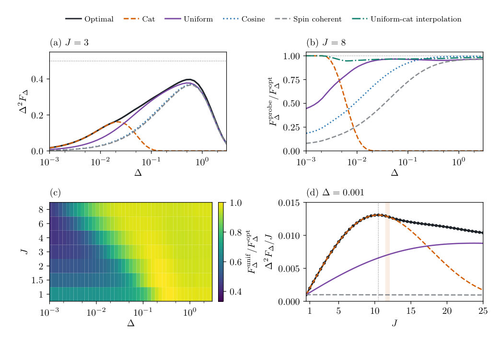
<figcaption class="paper-figure-caption"><b>Fig 1.</b> Fig. 1: Comparison of the performance for different probe states in estimating the dephasing ∆for Gaussian phase diffusion generated by Jz. (a) Normalized QFI for J = 3; the horizontal dotted line is the classical Gaussian bound ∆2F∆= 1/2 of Eq. (14). (b) Efficiency relative to the optimal QFI for J = 8. (c) Uniform-probe efficiency on a grid of (J, ∆) values. (d) Information per J at ∆= 10−3 for J = 1/2, 1, . . . , 25.</figcaption>
</figure>
<figure class="paper-figure-card">
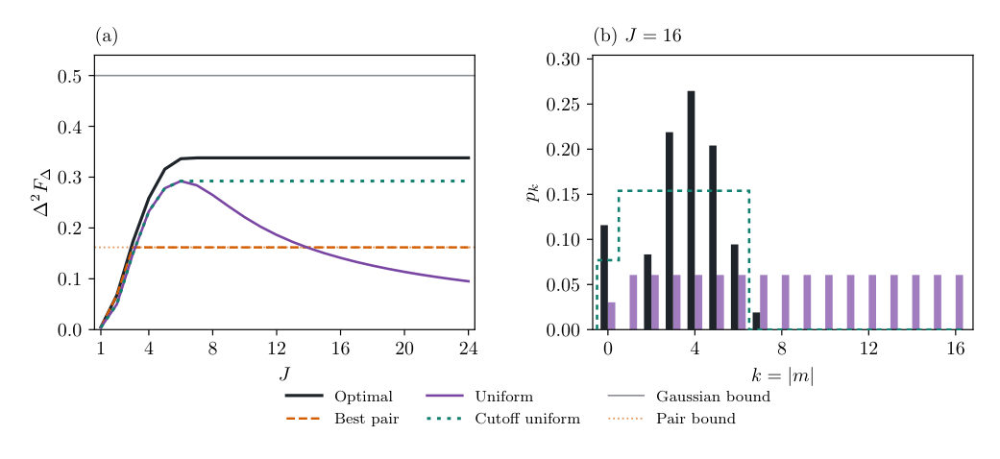
<figcaption class="paper-figure-caption"><b>Fig 2.</b> Fig. 2: Comparison of probe states for dephasing estimation with Gaussian phase diffusion generated by J2 z , at fixed ∆= 0.01. (a) Normalized QFI versus integer spin J, comparing the optimum, the best two-level probe, the uniform superposition of all levels, and the uniform superposition restricted to |m| ≤min(J, 6). (b) Total populations of the eigenspaces k = |m| at J = 16, with the same colors.</figcaption>
</figure>
<figure class="paper-figure-card">
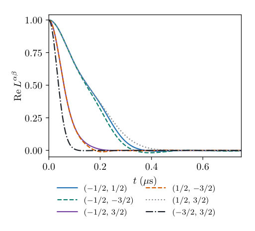
<figcaption class="paper-figure-caption"><b>Fig 3.</b> Fig. 3: Real part of the coherence factor over time for each pairwise superposition of states |α⟩and |β⟩.</figcaption>
</figure>
<figure class="paper-figure-card">
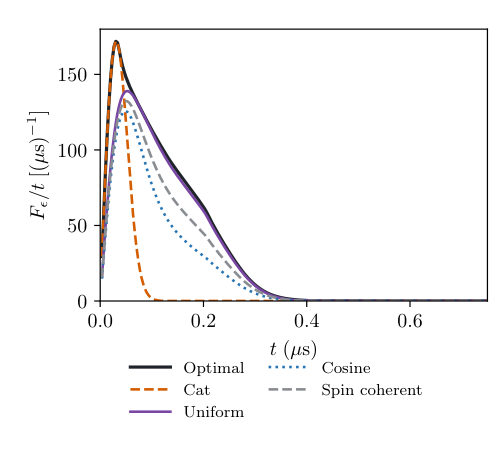
<figcaption class="paper-figure-caption"><b>Fig 4.</b> Fig. 4: Comparison of the Fϵ(t)/t figure of merit for dif- ferent states in the freely evolving system, with ϵ = 1.0.</figcaption>
</figure>
<figure class="paper-figure-card">
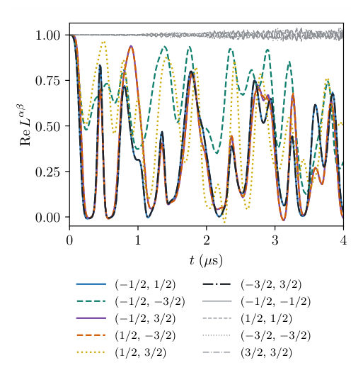
<figcaption class="paper-figure-caption"><b>Fig 5.</b> Fig. 5: Real parts of the coherence-factor matrix elements over time. Note that Lαα ≈1 for α = 1, 2, 3, 4. Here the total evolution time range is four times the free-evolution time τ, as can be seen in Eq. (52).</figcaption>
</figure>
</div>

<p><strong>Summary.</strong> This work determines the best initial quantum state (probe) for estimating noise parameters, specifically dephasing, in quantum spin systems. By maximizing the Quantum Fisher Information, the authors show that the optimal probe is highly sensitive to the noise strength and the specific dynamics of the system. This has implications for designing robust quantum sensors in solid-state or quantum computing architectures.</p>
<p><strong>Why it may be interesting.</strong> It provides a detailed, quantitative understanding of how noise affects quantum sensing limits, showing that the choice of probe state is not universal but depends on the noise characteristics and dynamics.</p>
<details>
<summary>Detailed structure</summary>
<p><strong>Main problem.</strong> The paper investigates the optimal quantum probe state required to estimate the dephasing strength in finite-dimensional quantum spin systems.</p>
<p><strong>Main result.</strong> The optimal probe state depends critically on the dephasing strength and the underlying dynamics; while cat states are optimal for weak Gaussian dephasing, other states can outperform them under non-Markovian evolution.</p>
<p><strong>Method.</strong> The authors use the Quantum Fisher Information (QFI) derived from solving a Semidefinite Program (SDP) to quantify estimation precision, comparing this to classical bounds.</p>
<p><strong>Model / system.</strong> The study focuses on general finite-dimensional quantum spin systems (qudits) subjected to dephasing channels, including Gaussian phase diffusion and dynamics modeled by coupling to a nuclear-spin bath.</p>
<p><strong>Key observables.</strong> Quantum Fisher Information (QFI), estimation precision, and the optimal probe state $
ho$.</p>
<p><strong>Important parameters / regimes.</strong> Dephasing strength ($\Delta$ or $\gamma$), spin quantum number ($J$), and the interrogation time ($t$).</p>
<p><strong>Assumptions / limitations.</strong> The optimization of estimation is treated locally, and the QFI calculation for general channels requires solving an SDP.</p>
<p><strong>Figures summary.</strong> Not specified.</p>
<p><strong>Paper structure.</strong> The paper first establishes the general framework using QFI maximization, then analyzes specific dephasing channels (like Gaussian phase diffusion), derives analytical bounds for the optimal probe (e.g., for $J=1, 3/2$), and finally applies the framework to a realistic central-spin model coupled to a bath.</p>
</details>
<details>
<summary>Abstract</summary>
<p>We investigate the optimal estimation of dephasing in finite-dimensional quantum spin systems. We first discuss some properties of the optimal probe states and present an efficient numerical algorithm to compute the optimal precision in dephasing estimation and identify the optimal probe states. For the dephasing channel arising from Gaussian phase diffusion, a spin cat state is known to be optimal for small dephasing. We analytically determine the range of dephasing strengths over which the cat state remains globally optimal for spins $J=1$ and $J=3/2$, and derive upper bounds on its optimality region for larger spins. We then compare numerically several probe states proposed in the literature, showing in particular that the simple class of probes obtained from uniform superpositions of all levels performs near-optimally for stronger dephasing. Finally, we apply our framework to a central-spin model coupled to a nuclear-spin bath, whose dynamics we simulate using the cluster-correlation expansion. Our results show that, while the cat state is optimal for weak Gaussian dephasing, pulse-controlled non-Markovian dynamics can favor states with amplitudes distributed over multiple spin levels, and in some cases the uniform state outperforms the other fixed probes considered. This shows how the choice of probe state depends both on the dephasing strength and on the dynamics.</p>
</details>
<p><sub><a href="#top">↑ back to top</a></sub></p>

<p><a id="paper-2610.32605"></a></p>
<h3 id="quantumbilliardsjl-an-extensible-user-friendly-high-performance-julia-library-for-the-large-scale-computation-of-spectra-and-eigenstates-of-quantum-billiards-and-related-problems"><a href="http://arxiv.org/abs/2610.32605v1">QuantumBilliards.jl: An extensible, user friendly, high-performance Julia library for the large scale computation of spectra and eigenstates of quantum billiards and related problems</a></h3>
<p><strong>Authors:</strong> Matic Orel, Črt Lozej<br>
<strong>Type:</strong> theory · <strong>Category:</strong> numerical methods · <strong>PDF:</strong> <a href="https://arxiv.org/pdf/2610.32605v1">https://arxiv.org/pdf/2610.32605v1</a><br>
<strong>Analysis basis:</strong> full PDF text, analyzed in chunks
<strong>Topic relevance:</strong> <code>analog quantum simulation</code> <strong>2/5</strong> · <code>methods for driven-dissipative</code> <strong>2/5</strong></p>
<div class="figure-strip-hint">↔ Scroll figures horizontally</div>
<div class="paper-figures-scroll">
<figure class="paper-figure-card">
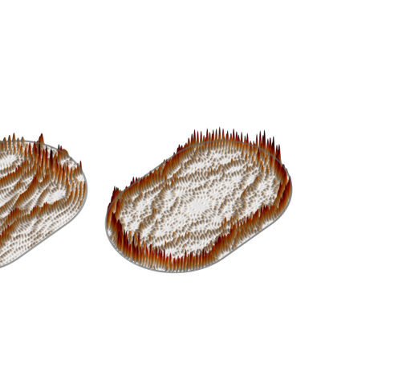
<figcaption class="paper-figure-caption"><b>Fig 1.</b> Figure 1: Examples of scarred eigenstates of the stadium billiard with half width equal to 1. The wavenumbers are k = 74.1838018, 74.22509066, 74.26339429.</figcaption>
</figure>
<figure class="paper-figure-card">
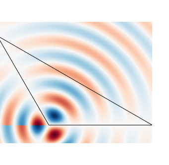
<figcaption class="paper-figure-caption"><b>Fig 2.</b> Figure 2: Examples of Helmholtz basis functions implemented in QuantumBilliards.jl. Left: a real plane-wave basis function for the sta- dium billiard. Right: a corner-adapted Fourier–Bessel basis function for a triangular billiard, centered at a corner so that the boundary conditions are incorporated directly into the basis. Eigenfunctions are constructed as linear combinations of such functions according to Eq. (6). For high-accuracy calculations, additional evanescent plane waves may be required near parts of the boundary that are difficult to resolve.</figcaption>
</figure>
<figure class="paper-figure-card">
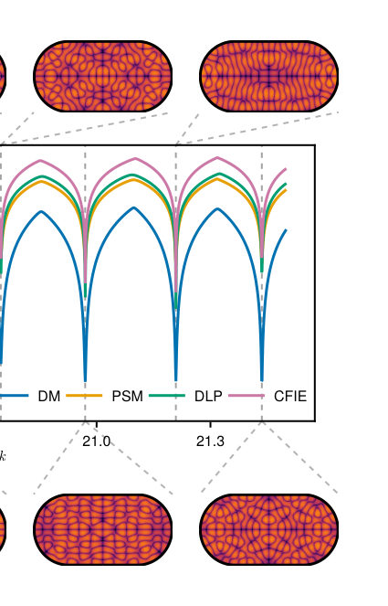
<figcaption class="paper-figure-caption"><b>Fig 3.</b> Figure 3: Direct spectral sweep for the stadium billiard in the (−1,−1) reflection- symmetry sector over k ∈[20,25]. The DM, PSM, DLP, and CFIE tensions are defined differently and therefore have different absolute scales, but their minima occur at the same physical eigenwavenumbers. The corresponding eigenfunctions are shown at various sweep tension minima and illustrate the different spatial structures of states. The wavefunction color-plots are shown in the logarithmic scale, with the black lines being the nodal lines.</figcaption>
</figure>
<figure class="paper-figure-card">
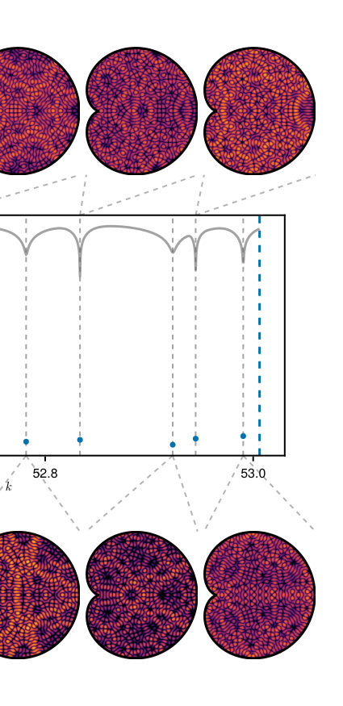
<figcaption class="paper-figure-caption"><b>Fig 4.</b> Figure 4: Poles of the inverse of the Fredholm matrix k as found via Beyn’s method. The 10 low-lying states were obtained with a single solve call. The blue points show the residual τ(k) = ||A(k)v(k)||</figcaption>
</figure>
<figure class="paper-figure-card">
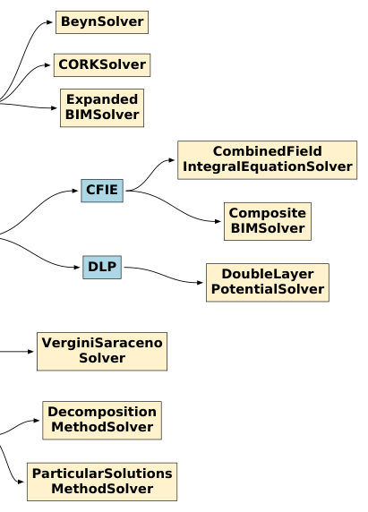
<figcaption class="paper-figure-caption"><b>Fig 5.</b> Figure 5: Type diagram of the solver types in the library. Abstract types are shown in blue and concrete types in yellow. The arrows connect each super-type to its subtypes.</figcaption>
</figure>
</div>

<p><strong>Summary.</strong> This paper introduces QuantumBilliards.jl, a comprehensive Julia library designed for high-performance computation of quantum spectra and eigenstates in 2D quantum billiards. It unifies several state-of-the-art numerical techniques, including advanced boundary integral methods and accelerated eigensolvers. This tool is crucial for studying quantum chaos and testing semiclassical conjectures in various geometries and fields.</p>
<p><strong>Why it may be interesting.</strong> While focused on quantum chaos, the advanced numerical techniques—such as structured linearization, compact Krylov methods, and specialized boundary integral formulations—are highly relevant for simulating complex quantum systems in AMO physics or open quantum systems.</p>
<details>
<summary>Detailed structure</summary>
<p><strong>Main problem.</strong> The core problem is solving the two-dimensional Helmholtz eigenproblem for quantum billiards, which requires finding the spectrum and eigenstates subject to Dirichlet boundary conditions.</p>
<p><strong>Main result.</strong> The authors present QuantumBilliards.jl, a high-performance Julia library that unifies multiple advanced numerical techniques for solving this challenging eigenvalue problem.</p>
<p><strong>Method.</strong> The library implements a suite of accelerated eigensolvers, including the Vergini–Saraceno scaling method, EBIM, Beyn's contour-integral method, and CORK, alongside basis-expansion and boundary-integral formulations.</p>
<p><strong>Model / system.</strong> The model is a 2D quantum billiard defined by a bounded domain B, governed by the Helmholtz equation derived from the Schrödinger equation. The system can be generalized to include magnetic fields or hyperbolic metrics.</p>
<p><strong>Key observables.</strong> Eigenvalues (energy levels $E=k^2$), eigenfunctions, Poincaré–Husimi (PH) phase-space representations, and spectral statistics (Poisson, GOE, GUE).</p>
<p><strong>Important parameters / regimes.</strong> Wavenumber $k$, characteristic length $L$, and the semiclassical limit ($kL \gg 1$).</p>
<p><strong>Assumptions / limitations.</strong> The methods rely on complex mathematical machinery, such as analytic continuation, logarithmic splitting, and the assumption of convergence for various basis sets and quadrature rules.</p>
<p><strong>Figures summary.</strong> Figures illustrate examples of scarred eigenstates in the stadium billiard, comparisons of spectral statistics against Wigner surmise, and visualizations of eigenstates in magnetic and hyperbolic billiards.</p>
<p><strong>Paper structure.</strong> The paper develops the theory by first establishing the quantum billiard problem, then detailing multiple numerical approaches (basis expansion, boundary integral methods), and finally showcasing the unified implementation and application of accelerated solvers to complex geometries and fields.</p>
</details>
<details>
<summary>Abstract</summary>
<p>We present QuantumBilliards.jl, an open-source Julia library providing a suite of numerical solvers for the two-dimensional interior Helmholtz eigenproblem with Dirichlet boundary conditions, a paradigmatic model in quantum chaos. The library implements conventional wavenumber-sweep techniques together with several accelerated eigensolvers: the Vergini--Saraceno scaling method, the expanded boundary integral method (EBIM), Beyn's contour-integral method, and the Compact Rational Krylov (CORK) method. It provides a common framework for constructing billiard geometries, exploiting discrete symmetries, computing eigenvalues and eigenstates, and treating smooth, cornered, and multiply connected domains. The library further includes reconstruction of eigenfunctions from boundary normal derivatives and the computation of Poincaré--Husimi (PH) phase-space representations.   Available at: https://github.com/Quantum-Chaos-Julia/QuantumBilliards.jl.</p>
</details>
<p><sub><a href="#top">↑ back to top</a></sub></p>

<p><a id="paper-2610.32001"></a></p>
<h3 id="quantummatterexplorer-an-autonomous-agent-for-the-discovery-of-quantum-many-body-phases-of-matter"><a href="http://arxiv.org/abs/2610.32001v1">QuantumMatterExplorer: An Autonomous Agent for the Discovery of Quantum Many-Body Phases of Matter</a></h3>
<p><strong>Authors:</strong> Jannes Nys, Andrew Jreissaty, Juan Carrasquilla<br>
<strong>Type:</strong> theory · <strong>Category:</strong> numerical methods · <strong>PDF:</strong> <a href="https://arxiv.org/pdf/2610.32001v1">https://arxiv.org/pdf/2610.32001v1</a><br>
<strong>Analysis basis:</strong> full PDF text, analyzed in chunks
<strong>Topic relevance:</strong> <code>analog quantum simulation</code> <strong>2/5</strong> · <code>methods for driven-dissipative</code> <strong>1/5</strong> · <code>quantum measurements</code> <strong>1/5</strong></p>
<div class="figure-strip-hint">↔ Scroll figures horizontally</div>
<div class="paper-figures-scroll">
<figure class="paper-figure-card">
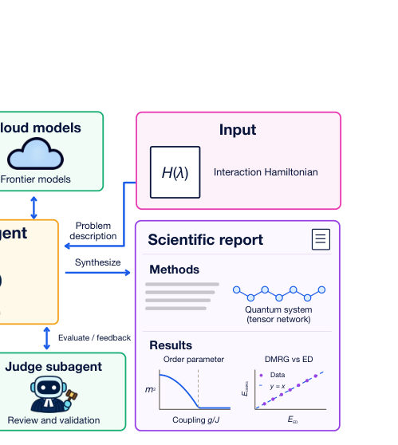
<figcaption class="paper-figure-caption"><b>Fig 1.</b> Figure 1: Overview of the QuantumMatterExplorer architecture.</figcaption>
</figure>
<figure class="paper-figure-card">
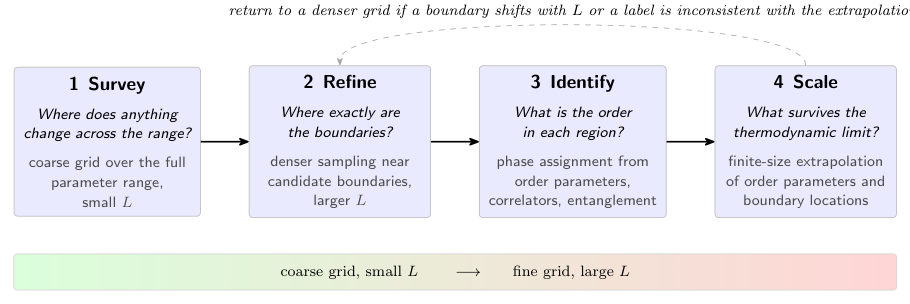
<figcaption class="paper-figure-caption"><b>Fig 2.</b> Figure 2: The exploration protocol. As a first step (not shown), an independent validation gate certifies the Hamiltonian and observables implementation against known limits and an exact- diagonalization cross-check before any result is trusted. A cheap coarse survey at the smallest system size then localizes candidate boundaries (Stage 1), so that the expensive large-L computation is concentrated only in windows around them (Stages 2–4) rather than spent uniformly over the parameter range. Each region is then characterized by its finite-size behavior, by searching for a possible order parameter, the excitation gap, or a topological signature that survives the L →∞ limit (Stage 3). Each...</figcaption>
</figure>
<figure class="paper-figure-card">
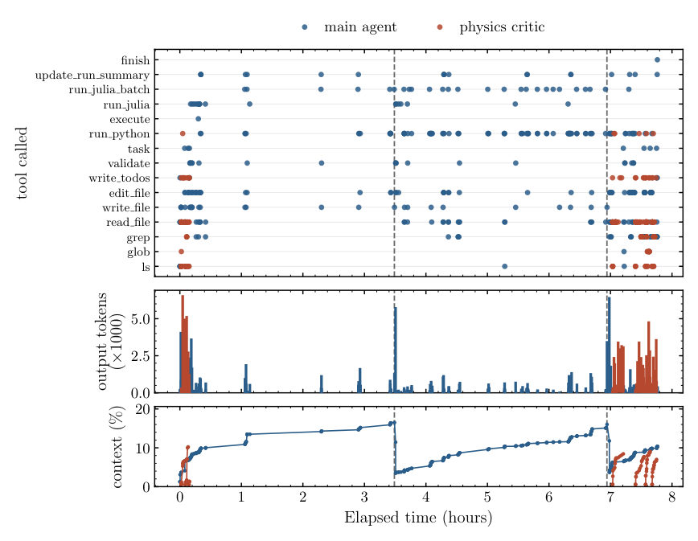
<figcaption class="paper-figure-caption"><b>Fig 3.</b> Figure 3: Trajectory with tool calls of one autonomous study using GPT-5.6-Luna at high reasoning effort on the spin-1 chain of Eq. (8). (A) Composition of the 653 tool calls and 453 model calls throughout the trajectory. Colors indicate the agent type performing the tool calls. (B) Output tokens per LLM call. (C) Fraction of the context window in use per agent type. Every subagent has its own context, which can be observed in the drop in context usage. The dashed lines mark the moments a context compression is triggered, which we impose at a fixed input token budget. The total study has a maximum time limit of 8 hours, which the agent anticipates, finalizing the execution at 7.7 hours.</figcaption>
</figure>
<figure class="paper-figure-card">
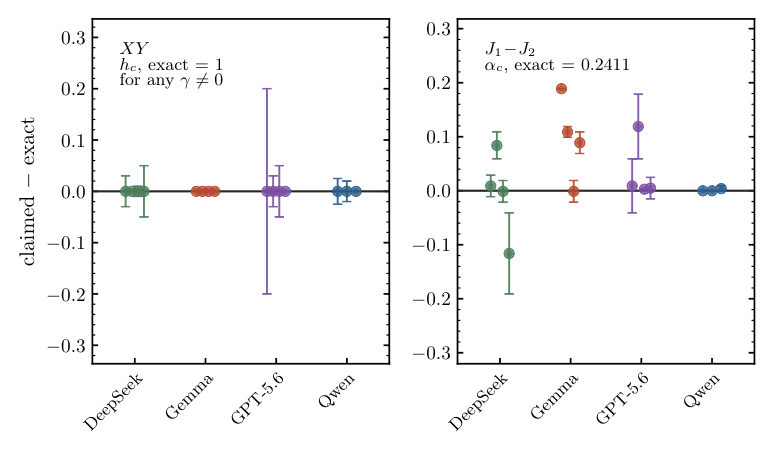
<figcaption class="paper-figure-caption"><b>Fig 4.</b> Figure 4: Accuracy of the reported transition points relative to their reference values. We show the numerically estimated transition points for the anisotropic XY and J1 −J2 models across multiple agentic runs using four LLM backends, following hyperparameter tuning (including LLM temperature). Error bars indicate the uncertainties stated by the agents in their respective research notes; no error bar is shown when no explicit uncertainty was provided. The XY critical field hc = 1 is exact (free-fermion solution), whereas the J1 −J2 dimerization point αc ≈0.2411 is determined numerically in Ref. [74].</figcaption>
</figure>
<figure class="paper-figure-card">
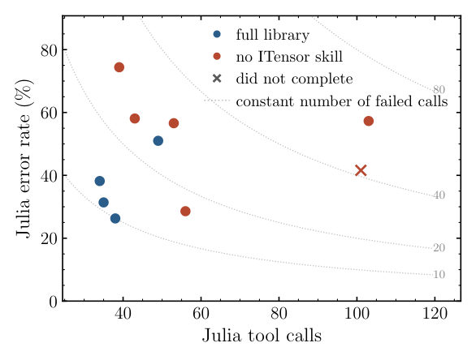
<figcaption class="paper-figure-caption"><b>Fig 5.</b> Figure 5: ITensor skills ablation study. Julia error rate versus the total number of Julia calls for multiple independent runs on the XY Hamiltonian, with (blue) and without (red) the itensor-dmrg skill available. The red cross indicates an experiment that reaches the 8-hour time budget due to a large number of failed coding attempts. Dashed lines show a constant number of Julia failures (failed = total calls × failure rate). The results are shown for a local Gemma 4 model.</figcaption>
</figure>
</div>

<p><strong>Summary.</strong> This paper introduces QuantumMatterExplorer, an autonomous agent that uses an LLM to guide numerical simulations for discovering quantum many-body phases. By adaptively selecting observables and refining scans, it successfully mapped a complex spin-1 chain phase diagram. This work establishes a practical, automated route for computational discovery in condensed matter physics.</p>
<p><strong>Why it may be interesting.</strong> The autonomous, LLM-driven approach represents a significant paradigm shift in computational physics, automating the tedious and expert-dependent process of phase diagram mapping.</p>
<details>
<summary>Detailed structure</summary>
<p><strong>Main problem.</strong> Mapping the phase diagram of a new quantum Hamiltonian requires expert judgment at every step, making autonomous exploration difficult.</p>
<p><strong>Main result.</strong> The developed agent successfully mapped candidate phases in a complex spin-1 chain Hamiltonian, achieving results in broad agreement with known physics without prior guidance.</p>
<p><strong>Method.</strong> The agent uses an LLM to drive an adaptive, multi-step simulation protocol, combining DMRG calculations with cross-checks via Exact Diagonalization.</p>
<p><strong>Model / system.</strong> The agent is tested on a frustrated bilinear-biquadratic spin-1 chain with single-ion anisotropy, a quantum many-body system defined by a general quantum Hamiltonian.</p>
<p><strong>Key observables.</strong> Néel order parameter ($m_{zz}$), string correlator, edge-sector gap, bond structure factor, and correlation-ratio crossings.</p>
<p><strong>Important parameters / regimes.</strong> Hamiltonian parameters (e.g., $J_2$, $D$), system size ($L$), and the thermodynamic limit ($L 
ightarrow \infty$).</p>
<p><strong>Assumptions / limitations.</strong> The agent requires explicit equipping with expert domain knowledge to function effectively in open-ended discovery tasks.</p>
<p><strong>Figures summary.</strong> Figures illustrate the agent's systematic exploration protocol (Coarse $
ightarrow$ Refine $
ightarrow$ Identify $
ightarrow$ Scale) and show the resulting phase diagram mapping candidate phases across parameter space.</p>
<p><strong>Paper structure.</strong> The paper introduces the QuantumMatterExplorer architecture, details its multi-stage exploration protocol, applies it to a specific spin-1 chain, and presents the resulting candidate phase diagram map.</p>
</details>
<details>
<summary>Abstract</summary>
<p>Mapping the phase diagram of a new quantum Hamiltonian demands expert judgement at every step: which observables to measure, where in parameter space to compute, or how to separate genuine order from finite-size artefacts. We introduce QuantumMatterExplorer, an autonomous agent that takes only a Hamiltonian and its parameter ranges as input and returns a phase diagram obtained from its own numerical simulations. The agent is built on a large language model and is designed to reason over a long horizon, maintain a persistent written plan, and drive a set of computational tools, with density-matrix renormalization group (DMRG) calculations cross-checked against independent exact diagonalization. The agent combines a large language model with persistent planning, a library of expert computational-physics skills, and density-matrix renormalization group calculations validated against independent exact diagonalization. It adaptively selects quantities to evaluate, refines parameter scans, and performs finite-size analyses as evidence accumulates. After validating the approach on Hamiltonians with known transitions, we challenge it with a frustrated bilinear-biquadratic spin-1 chain with single-ion anisotropy, whose two-dimensional phase diagram was published only recently and is unlikely to appear in any training corpus. Given no hint about the expected physics, the agent proposes which observables to probe, and identifies candidate Néel, Haldane and dimerized phases, in broad agreement with the reference phase diagram. It also detects incommensurate correlations and infers the frustration-dependent geometry of the phase boundaries, all within an eight-hour compute budget. These results open a practical route to the autonomous computational discovery of new phases of quantum matter.</p>
</details>
<p><sub><a href="#top">↑ back to top</a></sub></p>

<p><a id="paper-2610.32283"></a></p>
<h3 id="triplon-dynamics-from-partial-kondo-screening-in-frustrated-heavy-fermion-systems"><a href="http://arxiv.org/abs/2610.32283v1">Triplon dynamics from partial Kondo screening in frustrated heavy-fermion systems</a></h3>
<p><strong>Authors:</strong> Hiroki Nakahara, Masahito Mochizuki, Rintaro Eto<br>
<strong>Type:</strong> theory · <strong>Category:</strong> strongly correlated electrons · <strong>PDF:</strong> <a href="https://arxiv.org/pdf/2610.32283v1">https://arxiv.org/pdf/2610.32283v1</a><br>
<strong>Analysis basis:</strong> full PDF text, analyzed in chunks
<strong>Topic relevance:</strong> <code>Keldysh / 2PI / non-Gaussian methods</code> <strong>2/5</strong> · <code>analog quantum simulation</code> <strong>2/5</strong></p>
<div class="figure-strip-hint">↔ Scroll figures horizontally</div>
<div class="paper-figures-scroll">
<figure class="paper-figure-card">
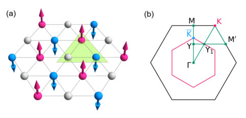
<figcaption class="paper-figure-caption"><b>Fig 1.</b> FIG. 1. (a) Schematic of the three-sublattice partially disordered state on the two-dimensional triangular lattice. A magnetic unit cell highlighted in green includes a Kondo-screened site without mag- netic moment (gray ball) and the remaining two sites with collinear antiferromagnetic order (magenta and cyan balls with arrows indi- cating spin orientation). (b) The first Brillouin zone (black) and the magnetic Brillouin zone (magenta). Green lines with markers indi- cate a high-symmetry momentum path employed in this work.</figcaption>
</figure>
<figure class="paper-figure-card">
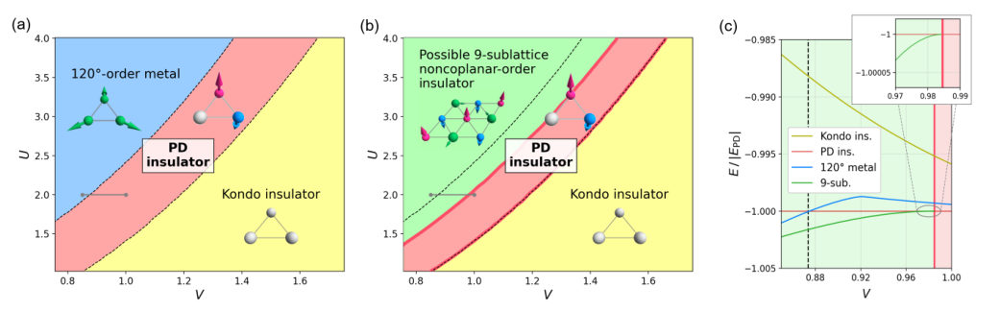
<figcaption class="paper-figure-caption"><b>Fig 2.</b> FIG. 2. (a) SCHF phase diagram obtained by restricting the magnetic unit cell to three sublattices, as reported in Ref. [35]. (b) SCHF+RPA phase diagram obtained by identifying linear instabilities of the SCHF mean-field states within RPA. While the KI-PD phase boundary co- incides with that obtained by SCHF, SCHF+RPA reveals an additional instability of the three-sublattice PD state toward a larger-unit-cell magnetic state, which is absent in the SCHF phase diagram restricted to the three-sublattice unit cell. (c) Comparison of the free energies of different magnetic states as a function of the hybridization V along the U = 2 cut indicated by the horizontal gray line in (a) and (b). The...</figcaption>
</figure>
<figure class="paper-figure-card">
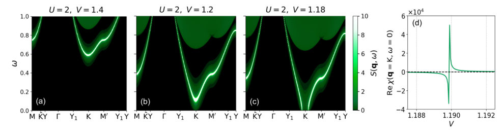
<figcaption class="paper-figure-caption"><b>Fig 3.</b> FIG. 3. (a)-(c) Transverse dynamical spin-structure factor S f f ⊥(q, ω) assuming the KI reference state at U = 2 for all panels, (a) V = 1.4, (b) V = 1.2, and (c) V = 1.18. (d) V-dependence of the real part of the static RPA susceptibility at K point and at U = 2.</figcaption>
</figure>
<figure class="paper-figure-card">
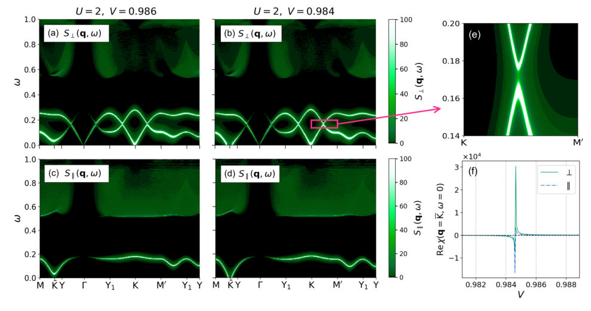
<figcaption class="paper-figure-caption"><b>Fig 4.</b> FIG. 4. (a)-(d) (a),(b) Transverse and (c),(d) longitudinal dynamical spin-structure factor S f f ⊥/∥(q, ω) assuming the three-sublattice PD mean- field reference state at U = 2 for all panels, (a),(c) V = 0.986 and (b),(d) V = 0.984. (e) Enlarged view of the transverse dynamical spin-structure factor at (U, V) = (2, 0.984). The plotted momentum-frequency region corresponds to the magenta box in (b). (f) V-dependence of the real part of the static RPA susceplibility at ¯K point and at U = 2.</figcaption>
</figure>
</div>

<p><strong>Summary.</strong> This theoretical work analyzes the complex ground state of frustrated heavy-fermion systems using the PAM on a triangular lattice. It shows that the Partially Disordered (PD) phase is characterized by coexisting magnetic and Kondo-screened regions, with transitions driven by triplon condensation. Crucially, the analysis predicts that the PD state is unstable and evolves into a larger, nine-sublattice magnetic order.</p>
<p><strong>Why it may be interesting.</strong> The detailed study of collective excitations (magnons/triplons) and their hybridization across quantum phase transitions provides a rich model for understanding emergent quantum dynamics in strongly correlated materials, relevant to understanding complex many-body ground states.</p>
<details>
<summary>Detailed structure</summary>
<p><strong>Main problem.</strong> The study investigates the dynamical properties and stability of the Partially Disordered (PD) phase, a state where magnetically ordered and Kondo-screened sites coexist, in frustrated heavy-fermion systems.</p>
<p><strong>Main result.</strong> The transition into the PD phase is driven by triplon condensation, and the PD state itself is unstable toward a larger, nine-sublattice magnetic order, which is revealed by the hybridization of magnon and triplon modes.</p>
<p><strong>Method.</strong> The analysis employs the Random-Phase Approximation (RPA) built upon a self-consistent Hartree-Fock (SCHF) mean-field solution to study collective excitations.</p>
<p><strong>Model / system.</strong> The system is modeled using the Periodic Anderson Model (PAM) on a triangular lattice, designed to capture the competition between Kondo screening and RKKY interactions in heavy-fermion compounds.</p>
<p><strong>Key observables.</strong> Dynamical spin susceptibility, collective excitations (magnons and triplons), and the static RPA susceptibility divergence.</p>
<p><strong>Important parameters / regimes.</strong> Hybridization strength ($V$), lattice geometry (triangular lattice), and the degree of magnetic order.</p>
<p><strong>Assumptions / limitations.</strong> The framework relies on the SCHF+RPA approach, which treats quantum fluctuations perturbatively around a static mean-field saddle point.</p>
<p><strong>Figures summary.</strong> Figures illustrate the schematic of the PD state, phase diagrams showing transitions (e.g., KI to PD), and the energy spectra showing magnon-triplon hybridization and mode softening.</p>
<p><strong>Paper structure.</strong> The paper progresses by first establishing the PD phase via SCHF, then using RPA to analyze the excitations, demonstrating the triplon-driven transitions, and finally using free energy comparisons and excitation analysis to predict the instability of the PD state toward a nine-sublattice order.</p>
</details>
<details>
<summary>Abstract</summary>
<p>The partially disordered (PD) phase, in which magnetically ordered and Kondo-screened sites coexist, has been proposed as a possible ground state of geometrically frustrated heavy-fermion systems. We investigate its dynamical properties in the half-filled periodic Anderson model on a triangular lattice by calculating the dynamical spin susceptibility within the random-phase approximation built on a self-consistent Hartree-Fock solution. We show that successive quantum phase transitions from the Kondo-insulating phase to the PD phase and to a magnetically ordered phase are driven by the condensation of triplon modes originating predominantly from the Kondo-screened sites. In the PD phase, magnons and triplons coexist and hybridize, leading to characteristic level repulsion in the excitation spectrum. These results reveal how triplet excitations evolve into collective magnetic modes across the successive phase transitions and highlight the dynamical interplay between magnetic order and Kondo screening in frustrated heavy-fermion systems.</p>
</details>
<p><sub><a href="#top">↑ back to top</a></sub></p>

<p><a id="paper-2610.32733"></a></p>
<h3 id="entanglement-asymmetry-and-asymmetry-contour-under-boundary-symmetry-breaking"><a href="http://arxiv.org/abs/2610.32733v1">Entanglement Asymmetry and Asymmetry Contour under Boundary Symmetry Breaking</a></h3>
<p><strong>Authors:</strong> Takahiro Orito, Daisuke Yamamoto<br>
<strong>Type:</strong> theory · <strong>Category:</strong> statistical mechanics · <strong>PDF:</strong> <a href="https://arxiv.org/pdf/2610.32733v1">https://arxiv.org/pdf/2610.32733v1</a><br>
<strong>Analysis basis:</strong> full PDF text, analyzed in chunks
<strong>Topic relevance:</strong> <code>analog quantum simulation</code> <strong>2/5</strong> · <code>Keldysh / 2PI / non-Gaussian methods</code> <strong>1/5</strong></p>
<div class="figure-strip-hint">↔ Scroll figures horizontally</div>
<div class="paper-figures-scroll">
<figure class="paper-figure-card">
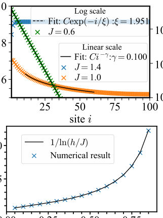
<figcaption class="paper-figure-caption"><b>Fig 1.</b> FIG. 1. (a) Expectation value of Xi as a function of the site index i for several values of J/h. The data for J/h = 1 and J/h = 1.4 are plotted on a linear scale using the left vertical axis, whereas the data for J/h = 0.6 are plotted on a logarithmic scale using the right vertical axis. We set hb = 0.5, h = 1, and L = 200. (b) The dependence of ξ as a function of J/h. The numerical data are fitted</figcaption>
</figure>
<figure class="paper-figure-card">

<figcaption class="paper-figure-caption"><b>Fig 2.</b> FIG. 2. (a) Schematic illustration of the bipartition of the system. (b) Numerical results for ∆S2(ℓA) as a function of the subsystem index ℓA for several values of J/h. We set hb = 0.5, h = 1, and L = 100. (c) Numerical result for Z2 as a function of the subsystem index ℓA for J/h = 1. We set hb = 0.5, h = 1, and L = 500. The solid line represents a fit to the power-law function f(ℓA) = Cℓ−γ A .</figcaption>
</figure>
<figure class="paper-figure-card">

<figcaption class="paper-figure-caption"><b>Fig 3.</b> FIG. 3. Color maps of ⟨Xi⟩as a function of the site index i and time t. Each row corresponds to a different value of hb while each column corresponds to a different value of J/h. The black dashed and gray dash-dotted lines indicate the propagation fronts corresponding to the quasiparticle velocity 2J and 2h, respectively. The values of hb increase from top to bottom, whereas J/h increases from left to right. The insets in panels (III-a) and (IV-a) show |⟨Xi⟩| on a logarithmic scale for the same parameters as in the main panels. In these insets, the white dash-dotted line indicates the propagation front corresponding to the quasiparticle velocity 2h. We set L = 50.</figcaption>
</figure>
<figure class="paper-figure-card">

<figcaption class="paper-figure-caption"><b>Fig 4.</b> FIG. 4. Color maps of ∆S2(ℓA) as a function of the subsystem index ℓA and time t. Each row corresponds to a different value of hb while each column corresponds to a different value of J/h. The values of hb increase from top to bottom, whereas J/h increases from left to right. We set L = 50. The black dashed and gray dash-dotted lines indicate the propagation fronts corresponding to the quasiparticle velocity 2J and 2h, respectively.</figcaption>
</figure>
<figure class="paper-figure-card">

<figcaption class="paper-figure-caption"><b>Fig 5.</b> Figure 3 shows the time evolution of ⟨Xi⟩after the bound- ary quench for several values of J/h and hb. To compare the propagation of the magnetization with the bulk quasiparticle velocity [37], we also plot the lines t = i−1</figcaption>
</figure>
</div>

<p><strong>Summary.</strong> This work analyzes how boundary magnetic fields break symmetry in the transverse-field Ising model, examining both magnetization and entanglement asymmetry (EA). The authors introduce the Asymmetry Contour (AC) as a novel, spatially resolved diagnostic tool that successfully captures the non-local information encoded in the reduced density matrix, providing a powerful complement to local measurements.</p>
<p><strong>Why it may be interesting.</strong> The development of the Asymmetry Contour is a significant theoretical advance, offering a tool to map non-local, information-theoretic properties (like entanglement asymmetry) onto a spatially resolved picture, which is crucial for understanding boundary effects in quantum dynamics.</p>
<details>
<summary>Detailed structure</summary>
<p><strong>Main problem.</strong> The paper investigates how symmetry-breaking boundary magnetic fields affect magnetization and Rényi-2 entanglement asymmetry (EA) in the transverse-field Ising model, and develops a spatially resolved measure for this information.</p>
<p><strong>Main result.</strong> The newly introduced Asymmetry Contour (AC) provides a spatially resolved characterization of symmetry-breaking information, complementing local magnetization by retaining sensitivity to non-local many-body correlations.</p>
<p><strong>Method.</strong> The analysis employs fermionic representations (Jordan-Wigner transformation) to map the problem onto a quadratic fermionic Hamiltonian, allowing the calculation of entanglement measures and dynamics.</p>
<p><strong>Model / system.</strong> The system studied is the transverse-field Ising model (TFIM) on a 1D lattice with open boundary conditions, perturbed by symmetry-breaking boundary magnetic fields.</p>
<p><strong>Key observables.</strong> Magnetization ($\langle X_i 
angle$), Rényi-2 Entanglement Asymmetry (EA), and the novel Asymmetry Contour (AC).</p>
<p><strong>Important parameters / regimes.</strong> The ratio of coupling constants ($J/h$), boundary field strength ($h_b$), and the system size ($L$).</p>
<p><strong>Assumptions / limitations.</strong> The analysis often relies on perturbative expansions (for small $h_b$ or $J/h$ ratios) and the use of fermionic approximations derived from the Hamiltonian diagonalization.</p>
<p><strong>Figures summary.</strong> Figures illustrate the phase-dependent behavior of magnetization and EA, and show color maps comparing the calculated Asymmetry Contour (AC) against Exact Diagonalization (ED) results over space and time.</p>
<p><strong>Paper structure.</strong> The paper proceeds by defining the system and observables, calculating the ground state properties (magnetization, EA) in various phases, and finally introducing and analyzing the Asymmetry Contour (AC) to provide a full spatial characterization of the symmetry breaking dynamics.</p>
</details>
<details>
<summary>Abstract</summary>
<p>We investigate how symmetry-breaking boundary magnetic fields affect magnetization and Rényi-2 entanglement asymmetry (EA) in the transverse-field Ising model. For the ground state, magnetization exhibits qualitatively distinct behaviors in the ordered and disordered phases. EA also exhibits phase-dependent behavior, which is well captured by the lower and upper bounds derived in this work. In the critical regime, both magnetization and EA exhibit behavior qualitatively consistent with the field-theoretical predictions for a related setup. We also study boundary-quench dynamics and find that magnetization propagates from the boundary into the bulk with a velocity consistent with the maximum quasiparticle velocity. In contrast, because EA is a subsystem-integrated quantity, its spatial structure is not directly resolved. We therefore introduce the asymmetry contour, a contour-like finite-difference quantity that provides a spatially resolved characterization of the symmetry-breaking information encoded in the reduced density matrix. The resulting contour is complementary to the local magnetization, retaining sensitivity to nonlocal many-body correlations while its dynamics also reflects the underlying quasiparticle propagation. These results show how EA and its contour can provide complementary information-theoretic characterizations of symmetry breaking and its spatial structure.</p>
</details>
<p><sub><a href="#top">↑ back to top</a></sub></p>

<p><a id="paper-2610.32841"></a></p>
<h3 id="hardware-friendly-estimation-of-lcu-based-expectation-values-via-quantum-to-classical-workload-shifting"><a href="http://arxiv.org/abs/2610.32841v1">Hardware-Friendly Estimation of LCU-Based Expectation Values via Quantum-to-Classical Workload Shifting</a></h3>
<p><strong>Authors:</strong> Hari Hara Suthan Chittoor, Thirumalai Manimaran<br>
<strong>Type:</strong> theory · <strong>Category:</strong> quantum information and computing · <strong>PDF:</strong> <a href="https://arxiv.org/pdf/2610.32841v1">https://arxiv.org/pdf/2610.32841v1</a><br>
<strong>Analysis basis:</strong> full PDF text, analyzed in chunks
<strong>Topic relevance:</strong> <code>analog quantum simulation</code> <strong>2/5</strong> · <code>quantum measurements</code> <strong>1/5</strong></p>
<div class="figure-strip-hint">↔ Scroll figures horizontally</div>
<div class="paper-figures-scroll">
<figure class="paper-figure-card">

<figcaption class="paper-figure-caption"><b>Fig 1.</b> FIG. 1: Quantum circuits of LCU-based expectation value estimation methods. (a) Standard LCU [11] requires ⌈log2 M⌉ancilla qubits, PREP/SELECT oracles, and amplitude amplification across all qubits. (b) Single-ancilla LCU [20] reduces to a single ancilla and two controlled unitaries per Monte Carlo sample, at the cost of a fresh circuit execution per sample. (c) HERMES requires only state preparation and Clifford rotations (single-qubit Clifford gates for QWC grouping), with no ancilla qubits.</figcaption>
</figure>
<figure class="paper-figure-card">

<figcaption class="paper-figure-caption"><b>Fig 2.</b> FIG. 2: Ground-state energy estimation for H2: (a) Eaprx, EF CI, and the ideal and noisy HERMES and PSA-LCU estimates (Hartree); (b) absolute error with respect to Eaprx; (c) absolute error with respect to EF CI.</figcaption>
</figure>
<figure class="paper-figure-card">

<figcaption class="paper-figure-caption"><b>Fig 3.</b> FIG. 3: Ground-state energy estimation for LiH: (a) Eaprx, EF CI, the ideal and noisy HERMES estimates, and the ideal PSA-LCU estimate (Hartree); (b) absolute error with respect to Eaprx; (c) absolute error with respect to EF CI. Noisy PSA-LCU results for LiH could not be obtained with the available resources (see Sec IV C and Sec IV D).</figcaption>
</figure>
<figure class="paper-figure-card">

<figcaption class="paper-figure-caption"><b>Fig 4.</b> Fig. 2a shows the ground-state energy of H2 for five bond lengths from 0.50 to 1.02 Å. The Eaprx values (25) follow the expected potential-energy profile, with a min- imum near the equilibrium bond length of 0.74 Å, and remain close to EF CI. In the ideal, noiseless, setting, both HERMES and PSA-LCU reproduce Eaprx closely over the entire range (Fig. 2b). HERMES thus attains the accuracy of PSA- LCU without the ancilla qubit and the controlled gates that PSA-LCU requires. Under noise, the two methods separate sharply. HER- MES retains the shape of the potential-energy curve, in- cluding a minimum (shifted from 0.74 to 0.90 Å), and its error is confined to the shortest bond lengths, decaying</figcaption>
</figure>
</div>

<p><strong>Summary.</strong> The paper introduces HERMES, a novel algorithm to estimate expectation values in quantum simulation by moving the processing of the evolution operator $A$ from the quantum hardware to the classical domain. By expanding operators in the Pauli basis, HERMES rewrites the calculation as a classical sampling problem over Pauli expectation values. This significantly reduces hardware requirements, enabling accurate and robust simulations on noisy, limited-qubit devices compared to existing LCU methods.</p>
<p><strong>Why it may be interesting.</strong> This work is highly relevant as it proposes a path to circumvent the most resource-intensive aspects of quantum simulation (implementing $A$ on hardware) by leveraging classical computation, making quantum chemistry simulations viable on near-term devices.</p>
<details>
<summary>Detailed structure</summary>
<p><strong>Main problem.</strong> The core problem is efficiently estimating the expectation value $\mu = 	ext{Tr}(OA
ho A^\dagger) / 	ext{Tr}(A
ho A^\dagger)$ for quantum simulation, where $A$ is a general, potentially non-unitary operator.</p>
<p><strong>Main result.</strong> The proposed HERMES method successfully shifts the complex quantum processing of $A$ entirely to the classical domain, achieving accuracy comparable to or better than state-of-the-art quantum circuits while requiring only shallow circuits with minimal quantum gates.</p>
<p><strong>Method.</strong> HERMES expands both the observable $O$ and the operator $A$ in the Pauli basis, rewriting the expectation value as a ratio of weighted sums of Pauli expectation values, which are then estimated via classical Monte Carlo sampling.</p>
<p><strong>Model / system.</strong> The method is tested on ground-state energy estimation for molecular Hamiltonians, specifically $   ext{H}_2$ and $ ext{LiH}$, derived from imaginary-time evolution.</p>
<p><strong>Key observables.</strong> Expectation values of Pauli observables ($ ext{Tr}(P
ho)$), ground-state energy ($\hat{E}$), and the ratio $\mu$.</p>
<p><strong>Important parameters / regimes.</strong> The number of Pauli terms in $A$ (which dictates classical overhead), the number of Monte Carlo samples, and the required circuit depth/gate count.</p>
<p><strong>Assumptions / limitations.</strong> The method assumes that $A$ and $O$ can be effectively decomposed into a manageable number of Pauli strings, and it relies on classical overhead growing with the number of these Pauli terms.</p>
<p><strong>Figures summary.</strong> Figures illustrate the comparison between Standard LCU, Single-ancilla LCU, and HERMES circuits, showing HERMES requires no ancilla qubits and no quantum implementation of $A$. Tables compare circuit metrics like gate count and depth.</p>
<p><strong>Paper structure.</strong> The paper first defines the expectation value problem and critiques existing LCU methods. It then introduces HERMES, detailing the Pauli decomposition and classical sampling strategy. Finally, it validates HERMES by comparing its performance against the Pauli single-ancilla LCU baseline on molecular ground-state energy calculations ($   ext{H}_2$, $    ext{LiH}$) under both noiseless and noisy conditions.</p>
</details>
<details>
<summary>Abstract</summary>
<p>Estimating the expectation value of an observable $O$ for a quantum state evolved under a general, possibly non-unitary, operator $A$ is a fundamental task in quantum simulation, chemistry, and variational algorithms. Existing linear-combination-of-unitaries (LCU) approaches implement $A$ on hardware, requiring ancilla qubits, controlled unitaries and, in randomized variants, fresh circuit executions for every Monte Carlo sample. These costs are prohibitive on NISQ and early fault-tolerant devices. We propose HERMES (Hardware-Efficient Reusable Measurements for Estimating LCU-based expectation valueS), which moves the processing of $A$ entirely to the classical domain. Expanding $A$ and $O$ in the Pauli basis and sampling pairs of Pauli terms classically, HERMES rewrites $μ= \mathrm{Tr}(OAρA^{\dagger})/\mathrm{Tr}(AρA^{\dagger})$ as a ratio of weighted sums of Pauli expectation values on the unmodified state $ρ$, with no ancillas, controlled unitaries, or quantum implementation of $A$. A two-level measurement reduction scheme (Pauli deduplication and commuting-group partitioning) bounds the number of distinct measurement settings independently of the sample count, unlike randomized LCU methods whose circuit executions grow linearly with it. On ground-state energy estimation of $\mathrm{H}_2$ and $\mathrm{LiH}$ via imaginary-time evolution, HERMES matches or beats Pauli single-ancilla LCU baseline using shallow circuits with no two-qubit gates beyond state preparation under qubit-wise commuting grouping. It is also more robust to noise and completes a noisy $\mathrm{LiH}$ simulation infeasible for the baseline, at the cost of classical overhead growing with the number of Pauli terms in $A$.</p>
</details>
<p><sub><a href="#top">↑ back to top</a></sub></p>

<p><a id="paper-2610.32458"></a></p>
<h3 id="hybrid-monte-carlo-for-the-extended-kane-mele-hubbard-model"><a href="http://arxiv.org/abs/2610.32458v1">Hybrid Monte Carlo for the extended Kane-Mele-Hubbard model</a></h3>
<p><strong>Authors:</strong> Finn L. Temmen, Thomas Luu, Johann Ostmeyer, Lin Wang<br>
<strong>Type:</strong> theory · <strong>Category:</strong> strongly correlated electrons · <strong>PDF:</strong> <a href="https://arxiv.org/pdf/2610.32458v1">https://arxiv.org/pdf/2610.32458v1</a><br>
<strong>Analysis basis:</strong> full PDF text, analyzed in chunks
<strong>Topic relevance:</strong> <code>analog quantum simulation</code> <strong>2/5</strong> · <code>methods for driven-dissipative</code> <strong>1/5</strong></p>
<div class="figure-strip-hint">↔ Scroll figures horizontally</div>
<div class="paper-figures-scroll">
<figure class="paper-figure-card">

<figcaption class="paper-figure-caption"><b>Fig 1.</b> Figure 1: Average phase Σ as a function of the nearest-neighbor interaction 𝑉at 𝑈= 3, 𝜆SO = 0, 𝜇= 0 and 𝛽= 4, shown for the three system sizes considered. The dotted line marks 𝐾𝑉= 𝑈, where the auxiliary field formulation is switched.</figcaption>
</figure>
<figure class="paper-figure-card">

<figcaption class="paper-figure-caption"><b>Fig 2.</b> Figure 2: Average phase Σ as a function of the on-site interaction 𝑈at 𝐾𝑉/𝑈= 1.5, 𝜇= 0 and 𝛽= 4, shown for the three system sizes considered and for increasing SOC from left to right.</figcaption>
</figure>
<figure class="paper-figure-card">

<figcaption class="paper-figure-caption"><b>Fig 3.</b> Figure 3: Average phase Σ as a function of the chemical potential 𝜇at 𝑈= 2, 𝐾𝑉/𝑈= 0.9 and 𝛽= 4, shown for the three system sizes considered and for increasing SOC from left to right.</figcaption>
</figure>
</div>

<p><strong>Summary.</strong> This paper tackles the computational challenge of simulating the extended Kane-Mele-Hubbard model, a realistic platform for studying topological materials. The authors develop a path integral formulation solvable by the Hybrid Monte Carlo algorithm. By analyzing the sign problem across various interaction regimes, they map out the parameter space where accurate quantum simulations are feasible.</p>
<p><strong>Why it may be interesting.</strong> The development of robust numerical techniques (HMC on auxiliary field formulations) to tackle the sign problem in complex topological models like Kane-Mele systems is highly relevant for understanding strongly correlated topological phases.</p>
<details>
<summary>Detailed structure</summary>
<p><strong>Main problem.</strong> The primary challenge is simulating the extended Kane-Mele-Hubbard model when nonlocal interactions dominate, as this regime suffers from a severe sign problem.</p>
<p><strong>Main result.</strong> The authors successfully developed a path integral formulation suitable for HMC, characterizing the sign problem across the parameter space and finding that the sign problem is mild at half filling.</p>
<p><strong>Method.</strong> The study uses the Hybrid Monte Carlo (HMC) algorithm applied to a path integral representation derived via the Hubbard-Stratonovich transformation and Suzuki-Trotter decomposition.</p>
<p><strong>Model / system.</strong> The system is the extended Kane-Mele-Hubbard model on a 2D honeycomb lattice, incorporating nearest-neighbor hopping, on-site interaction (U), nearest-neighbor interaction (V), and Kane-Mele Spin-Orbit Coupling (SOC).</p>
<p><strong>Key observables.</strong> The average phase $\Sigma$ is used to quantify the severity of the sign problem across the parameter space.</p>
<p><strong>Important parameters / regimes.</strong> Key parameters include the ratio of nonlocal to on-site interactions ($K_V/U$), the SOC strength ($\lambda_{SO}$), and the chemical potential ($\mu$).</p>
<p><strong>Assumptions / limitations.</strong> The methodology relies on the Hubbard-Stratonovich transformation and a second-order Suzuki-Trotter decomposition, which introduces an $O(\Delta t^2)$ error.</p>
<p><strong>Figures summary.</strong> Figures illustrate the sign problem diagnostic ($\Sigma$) as a function of varying $V$, $U$, and $\mu$, showing how the sign problem deepens when nonlocal interactions become dominant relative to on-site interactions.</p>
<p><strong>Paper structure.</strong> The paper first introduces the model and the difficulty posed by the sign problem. It then details the theoretical machinery: applying the Hubbard-Stratonovich transformation and deriving the path integral representation suitable for HMC simulation. Finally, it presents systematic scans over model parameters to map the feasibility of the simulation.</p>
</details>
<details>
<summary>Abstract</summary>
<p>The Hubbard model offers a powerful minimal description of strongly correlated electrons in molecules and materials, yet it neglects effects observed in nature that give rise to a much richer variety of physics. For instance, including nonlocal interactions introduces a competition between strongly correlated phases, while incorporating spin-orbit coupling (SOC) can lead to the emergence of exotic topological phases. Seeking a more realistic platform for simulating graphene and, potentially, related materials such as transition metal dichalcogenides (TMDs), we therefore consider the extended Kane-Mele-Hubbard model, which features a Kane-Mele SOC term and nearest-neighbor interactions. Simulating this model is particularly challenging once the nonlocal interactions become dominant over the on-site Hubbard interaction, as a severe sign problem arises already at half filling, leaving this regime largely unexplored. In this work, we develop continuous auxiliary field formulations of the model, suitable for treatment with the Hybrid Monte Carlo (HMC) algorithm. Using these formulations, we characterize the sign problem across the model's parameter space and establish where simulations are feasible, as a first step toward the full phase diagram.</p>
</details>
<p><sub><a href="#top">↑ back to top</a></sub></p>

<p><a id="paper-2610.32974"></a></p>
<h3 id="maximal-orbital-entanglement-from-non-interacting-fermions"><a href="http://arxiv.org/abs/2610.32974v1">Maximal Orbital Entanglement from Non-Interacting Fermions</a></h3>
<p><strong>Authors:</strong> Damiano Aliverti-Piuri, Julia Liebert, Christian Schilling<br>
<strong>Type:</strong> theory · <strong>Category:</strong> quantum information and computing · <strong>PDF:</strong> <a href="https://arxiv.org/pdf/2610.32974v1">https://arxiv.org/pdf/2610.32974v1</a><br>
<strong>Analysis basis:</strong> full PDF text, analyzed in chunks
<strong>Topic relevance:</strong> <code>analog quantum simulation</code> <strong>2/5</strong> · <code>quantum measurements</code> <strong>1/5</strong></p>
<div class="figure-strip-hint">↔ Scroll figures horizontally</div>
<div class="paper-figures-scroll">
<figure class="paper-figure-card">

<figcaption class="paper-figure-caption"><b>Fig 1.</b> Figure 1. Yin and yang of orbital rotations: maximizing or- bital correlation as a resource in quantum information (QI) versus minimizing it to reduce representational complexity in quantum many-body physics (QMB); see text for details.</figcaption>
</figure>
<figure class="paper-figure-card">

<figcaption class="paper-figure-caption"><b>Fig 2.</b> Figure 2. 1P unitary evolution of an SD of three fermions (circles) in a lattice of 6 + 4 sites (squares), numbered from top to bottom and from left to right. The initial SD |SD0⟩= f † ϕ1f † ϕ2f † ϕ3|0⟩(above) exhibits no orbital entanglement. The evolution is described by a unitary on H1 mapping |ϕj⟩7→ u|ϕj⟩= |ϕ′ j⟩. |SD0⟩is transformed into |SD⟩= f † ϕ′ 1f † ϕ′ 2f † ϕ′ 3|0⟩</figcaption>
</figure>
<figure class="paper-figure-card">

<figcaption class="paper-figure-caption"><b>Fig 3.</b> Figure 3. Representation of the orbitals involved in the con- struction of the optimal SD described in Result 1 for three fermions in a lattice of 6 + 4 sites.</figcaption>
</figure>
<figure class="paper-figure-card">

<figcaption class="paper-figure-caption"><b>Fig 4.</b> Figure 4. Strategy for maximizing the orbital total correlation Cλ of a free state ρ over 1P unitaries U. (i) Restricting to free states allows us to map the problem from the 2d-dimensional Fock space to d × d 1RDMs γ whose eigenvalues equal the NONs n of ρ. (ii) Invariance under orbital rotations within each lattice region further reduces the problem to the 1RDMs’ block spectra b, which form a convex polytope Bλ n. (iii) The strictly Schur-concave objective function H is maximized by the majorization-least element of Bλ n. (iv) This element cor- responds to an optimal 1P unitary built with discrete Fourier transform-type unitaries.</figcaption>
</figure>
<figure class="paper-figure-card">

<figcaption class="paper-figure-caption"><b>Fig 5.</b> Figure 5. A slice of the n-domain for d = 4 and λ = (2, 1, 1), for fixed n1 and n4. The blue, red, and green regions are slices of the first, second, and third regimes, respectively, as shown in Eq. (51). We emphasize the symmetry of the figure with respect to the line n2 + n3 = n1 + n4.</figcaption>
</figure>
</div>

<p><strong>Summary.</strong> This work determines the maximum amount of orbital entanglement extractable from non-interacting fermionic states using orbital rotations. By calculating this entanglement for various lattice partitions, the authors establish a quantitative link between mean-field quantum states and their potential utility as quantum information resources. This bridges a gap between condensed matter theory and quantum information science.</p>
<p><strong>Why it may be interesting.</strong> It provides a rigorous, quantitative framework showing how mean-field states, typically viewed as approximations, can be engineered to serve as valuable, quantifiable resources for quantum information processing.</p>
<details>
<summary>Detailed structure</summary>
<p><strong>Main problem.</strong> The study aims to quantify the maximum orbital entanglement that non-interacting fermions, described by Slater determinants, can carry, contrasting this with the typical goal of minimizing correlation in many-body physics.</p>
<p><strong>Main result.</strong> The maximal orbital entanglement for non-interacting fermions on a bipartite lattice is proven to be $\min\{\lambda_1, \lambda_2, N, d-N\}$ ebits, which equals the maximum over all fermionic states under certain conditions.</p>
<p><strong>Method.</strong> The analysis uses the 1-particle reduced density matrix formalism, deriving entanglement measures for various partitions and employing new majorization relations for Hermitian matrices.</p>
<p><strong>Model / system.</strong> The system consists of $N$ identical, spinless fermions on a bipartite lattice of $d$ sites, modeled by Slater determinants. The dynamics are governed by arbitrary one-particle (1P) unitary rotations.</p>
<p><strong>Key observables.</strong> Orbital Entanglement Entropy ($E$), Orbital Total Correlation ($   ilde{C}_{\lambda}^{\max}$), and the 1-particle reduced density matrix (1RDM).</p>
<p><strong>Important parameters / regimes.</strong> Number of fermions ($N$), total sites ($d$), and the partition sizes ($\lambda_1, \lambda_2$).</p>
<p><strong>Assumptions / limitations.</strong> The ability to apply arbitrary 1P unitary evolution ($u$) to the single-particle space is assumed for maximizing entanglement.</p>
<p><strong>Figures summary.</strong> Figures illustrate the contrast between correlation minimization (QMB) and maximization (QI) via orbital rotations, and show the construction of optimal entangled states.</p>
<p><strong>Paper structure.</strong> The paper establishes the problem by contrasting physical needs, derives the maximal entanglement for basic bipartite cases, and then generalizes the calculation to arbitrary partitions and correlation measures using advanced matrix theory.</p>
</details>
<details>
<summary>Abstract</summary>
<p>Orbital rotations are used in quantum many-body physics and chemistry to reduce the complexity of quantum states by compressing their correlation into a small set of relevant orbitals. In striking contrast, quantum information processing strives for the opposite: orbitals that maximize entanglement as a resource. Motivated by this, we prove that Slater determinants of $N$ fermions on a lattice of $d_A + d_B = d$ sites, although free of particle correlation, can carry up to $\min\{d_A, d_B, N, d-N\}$ ebits of orbital entanglement. Given enough particles and holes, this equals the maximum over all fermionic states. For arbitrary free states, we derive the maximal orbital total correlation in closed form for all bipartitions, the finest partition, and all partitions of up to five sites, using new majorization relations for Hermitian matrices. Taken together, these results turn mean-field states, the starting point of most many-body methods in physics and chemistry, into a viable resource for quantum information processing.</p>
</details>
<p><sub><a href="#top">↑ back to top</a></sub></p>

<p><a id="paper-2610.32762"></a></p>
<h3 id="quantum-machine-learning-in-medical-imaging-a-primer-for-radiologists"><a href="http://arxiv.org/abs/2610.32762v1">Quantum Machine Learning in Medical Imaging: A Primer for Radiologists</a></h3>
<p><strong>Authors:</strong> Ruben Ortiz Cordero, Gaven K. Smart, Harshada Gothankar, Emilio Supsupin, Priya Bhosale, Mayur Virarkar<br>
<strong>Type:</strong> theory · <strong>Category:</strong> quantum information and computing · <strong>PDF:</strong> <a href="https://arxiv.org/pdf/2610.32762v1">https://arxiv.org/pdf/2610.32762v1</a><br>
<strong>Analysis basis:</strong> full PDF text, analyzed in chunks
<strong>Topic relevance:</strong> <code>QC/QI experiment</code> <strong>2/5</strong> · <code>quantum measurements</code> <strong>1/5</strong></p>
<div class="figure-strip-hint">↔ Scroll figures horizontally</div>
<div class="paper-figures-scroll">
<figure class="paper-figure-card">

<figcaption class="paper-figure-caption"><b>Fig 1.</b> Figure 1. Classical versus quantum computation. A classical register of n bits occupies exactly one of its 2ⁿ possible states at any moment, and capacity scales linearly with bit count. An n-qubit quantum register can hold all 2ⁿ basis states in superposition and represent correlations through entanglement. Still, measurement returns a single classical outcome, so practical advantage depends on interference and algorithm design.</figcaption>
</figure>
<figure class="paper-figure-card">

<figcaption class="paper-figure-caption"><b>Fig 2.</b> Figure 2. Five core quantum computing concepts. A qubit is the basic unit of quantum information. Superposition allows a qubit to occupy weighted combinations of 0 and 1 until measured. Entanglement links qubits so their states are correlated. Quantum gates are reversible operations that manipulate qubit states. Quantum circuits chain gates into data- encoding, parameterized transformation, and measurement layers whose repeated readout yields the prediction.</figcaption>
</figure>
<figure class="paper-figure-card">

<figcaption class="paper-figure-caption"><b>Fig 3.</b> Figure 3. Quantum hardware platforms in the noisy intermediate-scale quantum (NISQ) era. Superconducting processors dominate medical imaging research and are cloud accessible. Trapped-ion systems offer longer coherence times at smaller scales. Photonic platforms operate at room temperature but remain difficult to control. All current devices are noisy, have limited qubit counts, and lack full error correction.</figcaption>
</figure>
<figure class="paper-figure-card">

<figcaption class="paper-figure-caption"><b>Fig 4.</b> Figure 4. Quantum machine learning in practice. (A) The four architectures most used in medical imaging: quantum support vector machines (QSVMs) classify in a quantum feature space; quantum neural networks (QNNs) build layers from circuit operations; variational quantum circuits (VQCs) train encode-transform-measure loops through a classical optimizer; quantum convolutional neural networks (QCNNs) apply convolution and pooling in the quantum domain with O(log N) parameters. (B) The hybrid quantum-classical pipeline used by most published systems comprises classical preprocessing and feature extraction; quantum encoding and transformation; measurement; and a classical output layer, with a...</figcaption>
</figure>
<figure class="paper-figure-card">

<figcaption class="paper-figure-caption"><b>Fig 5.</b> Figure 5. Quantum image representations. The flexible representation of quantum images (FRQI) encodes pixel intensities in probability amplitudes, so accurate recovery is probabilistic and requires repeated measurements. The novel enhanced quantum representation (NEQR) stores intensity in orthogonal basis states of a qubit sequence, permitting direct readout and lower reported preparation complexity at the cost of additional qubits.</figcaption>
</figure>
</div>

<p><strong>Summary.</strong> This review serves as a primer for radiologists on applying Quantum Machine Learning (QML) to medical imaging. It introduces fundamental quantum concepts and surveys architectures like QCNNs used for tasks such as tumor classification and image reconstruction. The paper concludes that while the potential is high, current applications are largely proof-of-concept studies constrained by noisy, near-term quantum hardware.</p>
<p><strong>Why it may be interesting.</strong> It provides a direct, applied roadmap for how quantum information concepts (like entanglement and circuit design) are being mapped onto real-world, complex data structures (medical images), which is relevant for understanding quantum feature mapping in high-dimensional spaces.</p>
<details>
<summary>Detailed structure</summary>
<p><strong>Main problem.</strong> The computational cost of training and deploying modern deep learning models in radiology is outpacing classical hardware capabilities, creating a bottleneck for advanced medical image analysis.</p>
<p><strong>Main result.</strong> Quantum Machine Learning (QML) architectures like QCNNs and QSVMs show promise for tasks like tumor classification and image reconstruction, though current implementations are limited to small, simulated datasets.</p>
<p><strong>Method.</strong> The work reviews and applies hybrid quantum-classical pipelines, using quantum circuits to process encoded image features for classification and segmentation.</p>
<p><strong>Model / system.</strong> The study discusses core quantum concepts (qubits, superposition, entanglement) and applies them to NISQ hardware platforms (superconducting, trapped-ion, photonic). QML models include QSVMs, QNNs, VQCs, and QCNNs.</p>
<p><strong>Key observables.</strong> Validation accuracy (e.g., 91.47% for brain tumor MRI), Dice coefficient (e.g., 98% for segmentation), and AUC.</p>
<p><strong>Important parameters / regimes.</strong> The exponential scaling of quantum state space ($2^n$) versus linear classical scaling; the constraint imposed by NISQ noise and decoherence.</p>
<p><strong>Assumptions / limitations.</strong> Most reported performance is based on small, downsampled benchmark datasets or simulators, and clinical deployment is not yet feasible.</p>
<p><strong>Figures summary.</strong> Figures illustrate the five core quantum concepts, compare classical vs. quantum state scaling, show hardware platforms, and summarize the landscape of QML applications.</p>
<p><strong>Paper structure.</strong> The paper introduces five core quantum concepts, reviews current hardware platforms, summarizes applicable QML architectures (QSVM, QNN, etc.), and reports on various medical imaging applications.</p>
</details>
<details>
<summary>Abstract</summary>
<p>Deep learning has transformed radiology, but the computational cost of training and deploying modern models is outpacing what classical hardware can support. Quantum computing has been proposed as one response to this bottleneck: an n-qubit system can represent $2^n$ states simultaneously, although practical speedups require efficient algorithms, data encoding, and measurement strategies rather than superposition alone. This review introduces radiologists to five core quantum concepts, qubits, superposition, entanglement, quantum gates, and quantum circuits, and to the superconducting, trapped-ion, and photonic hardware platforms that define the current noisy intermediate-scale quantum (NISQ) era. We then summarize the quantum machine learning architectures most often applied to medical imaging (quantum support vector machines, quantum neural networks, variational quantum circuits, and quantum convolutional neural networks) and quantum image representations such as the flexible representation of quantum images (FRQI) and the novel enhanced quantum representation (NEQR). Reported applications include brain tumor classification and segmentation on MRI, pneumonia detection on chest radiographs, skin and breast lesion classification, CT and PET reconstruction, and ultrasound denoising. Nearly all published systems are hybrid quantum-classical pipelines evaluated on small, downsampled benchmark datasets or simulators, and clinical deployment is not yet feasible. We conclude with current limitations and translational priorities for radiology.</p>
</details>
<p><sub><a href="#top">↑ back to top</a></sub></p>

<p><a id="paper-2610.32649"></a></p>
<h3 id="approximating-the-gibbs-measure-of-spherical-spin-glasses-to-within-math387math-in-the-replica-symmetric-phase"><a href="http://arxiv.org/abs/2610.32649v1">Approximating the Gibbs Measure of Spherical Spin Glasses to Within $o(N^{-1/2})$ in the Replica Symmetric Phase</a></h3>
<p><strong>Authors:</strong> Brice Huang, Andrea Montanari, Huy Tuan Pham<br>
<strong>Type:</strong> theory · <strong>Category:</strong> disordered systems and neural networks · <strong>PDF:</strong> <a href="https://arxiv.org/pdf/2610.32649v1">https://arxiv.org/pdf/2610.32649v1</a><br>
<strong>Analysis basis:</strong> full PDF text, analyzed in chunks
<strong>Topic relevance:</strong> <code>Keldysh / 2PI / non-Gaussian methods</code> <strong>2/5</strong></p>
<div class="figure-strip-hint">↔ Scroll figures horizontally</div>
<div class="paper-figures-scroll">
<figure class="paper-figure-card">

<figcaption class="paper-figure-caption"><b>Fig 1.</b> Low-resolution page preview, page 2</figcaption>
</figure>
<figure class="paper-figure-card">

<figcaption class="paper-figure-caption"><b>Fig 2.</b> Low-resolution page preview, page 3</figcaption>
</figure>
<figure class="paper-figure-card">

<figcaption class="paper-figure-caption"><b>Fig 3.</b> Low-resolution page preview, page 4</figcaption>
</figure>
<figure class="paper-figure-card">

<figcaption class="paper-figure-caption"><b>Fig 4.</b> Low-resolution page preview, page 5</figcaption>
</figure>
<figure class="paper-figure-card">

<figcaption class="paper-figure-caption"><b>Fig 5.</b> Low-resolution page preview, page 6</figcaption>
</figure>
</div>

<p><strong>Summary.</strong> This theoretical paper provides sharp, high-order approximations for the magnetization of mixed spherical spin glasses operating in the replica symmetric phase. By extending analysis beyond simple quadratic models to include cubic disorder, the authors achieve an error bound of $o(N^{-1/2})$. This work is significant for applications requiring extreme accuracy in statistical physics models, such as stochastic localization techniques.</p>
<p><strong>Why it may be interesting.</strong> While focused on spin glasses, the rigorous mathematical techniques developed for error control and high-order moment estimation are highly relevant to analyzing complex quantum many-body systems where standard mean-field approximations fail.</p>
<details>
<summary>Detailed structure</summary>
<p><strong>Main problem.</strong> The paper aims to derive highly accurate approximations for the Gibbs measure of mixed spherical spin glasses, specifically achieving an error bound of $o(N^{-1/2})$ per coordinate.</p>
<p><strong>Main result.</strong> It provides an explicit coordinatewise expansion for the magnetization vector, including the leading cubic disorder correction, and a corresponding high-moment bound for the full vector.</p>
<p><strong>Method.</strong> The analysis combines techniques from complex analysis, including Laplace transforms and saddle-point approximations, with rigorous bounding of error terms using concentration inequalities.</p>
<p><strong>Model / system.</strong> The system studied is a mixed spherical spin glass governed by a Hamiltonian $H_{N}^{p,q}(\sigma)$, which is analyzed in the replica symmetric phase.</p>
<p><strong>Key observables.</strong> Magnetization vector ($\langle \sigma 
angle$), resolvent response to the external field, and high-moment estimates of the magnetization.</p>
<p><strong>Important parameters / regimes.</strong> The analysis is valid in the replica symmetric phase, assuming weak external fields ($\langle u 
angle \le c_0 \sqrt{N}$), and requires the replica symmetry condition $\xi_{p,q}^2 \ll 1$.</p>
<p><strong>Assumptions / limitations.</strong> The results rely heavily on the replica symmetry assumption and the ability to control error terms using exponential decay bounds, particularly when perturbing away from purely quadratic models.</p>
<p><strong>Paper structure.</strong> The paper develops by first analyzing quadratic models using Laplace transforms and saddle-point methods (establishing preliminary lemmas). It then extends this analysis to include cubic disorder terms, deriving the coordinatewise expansion (Theorem 2.1), and finally proving the full high-moment bound (Theorem 2.2) by controlling error terms through concentration inequalities.</p>
</details>
<details>
<summary>Abstract</summary>
<p>We study the magnetization vector of mixed spherical spin glasses in a weak external field, in the replica symmetric phase. We derive a coordinatewise expansion of the magnetization which includes the leading cubic correction to the quadratic approximation, with an error that is $o(N^{-1/2})$ per coordinate. We also prove a corresponding high-moment bound for the full vector. Finally, our companion paper applies these estimates to the effective Hamiltonian obtained by restricting a tilted spherical spin glass to a narrow band around a TAP critical point. The resulting sharp approximation is designed for applications in which normalized Wasserstein accuracy is insufficient, including total-variation sampling by stochastic localization.</p>
</details>
<p><sub><a href="#top">↑ back to top</a></sub></p>

<p><a id="paper-2610.32072"></a></p>
<h3 id="boundary-shape-controls-the-stress-distribution-in-two-component-elastic-materials"><a href="http://arxiv.org/abs/2610.32072v1">Boundary shape controls the stress distribution in two-component elastic materials</a></h3>
<p><strong>Authors:</strong> Kyungeun Kim, Adam Clare, Miranda Holmes-Cerfon<br>
<strong>Type:</strong> theory · <strong>Category:</strong> disordered systems and neural networks · <strong>PDF:</strong> <a href="https://arxiv.org/pdf/2610.32072v1">https://arxiv.org/pdf/2610.32072v1</a><br>
<strong>Analysis basis:</strong> full PDF text, analyzed in chunks
<strong>Topic relevance:</strong> <code>analog quantum simulation</code> <strong>2/5</strong></p>
<div class="figure-strip-hint">↔ Scroll figures horizontally</div>
<div class="paper-figures-scroll">
<figure class="paper-figure-card">

<figcaption class="paper-figure-caption"><b>Fig 1.</b> FIG. 2. Definition of regions relative to stress redistri- bution and energy propagation. The wavy blue region represents Ω(interior region), the white space represents Ωc (exterior region), and the boundary represents a layer connecting them.</figcaption>
</figure>
<figure class="paper-figure-card">

<figcaption class="paper-figure-caption"><b>Fig 2.</b> FIG. 1. Representative plant cell structures. (a) Epider- mal peel from red onion (Allium cepa) showing regular packed pigmented cells [2] (CC BY-SA 3.0, Adrian J. Hunter). (b) Cropped image of Leaf epidermis of Phase- olus coccineus with stomata, showing irregular tiling [3] (CC BY-SA 4.0, ChrisInMilton). (c) Vascular bundle in older Helianthus dicot stem, showing hierarchical multi- scale packing [4] (CC0 1.0, Meisam; Berkshire Com- munity College Bioscience Image Library). (d) Mono- cot root vascular bundle in Acorus showing Casparian strip [5] (CC0 1.0, Netha Hussain; Berkshire Commu- nity College Bioscience Image Library).</figcaption>
</figure>
<figure class="paper-figure-card">

<figcaption class="paper-figure-caption"><b>Fig 3.</b> FIG. 4. Prestress model: (a) Gaussian Random Field to represent correlated stress (b) Randomized stress model,</figcaption>
</figure>
<figure class="paper-figure-card">

<figcaption class="paper-figure-caption"><b>Fig 4.</b> FIG. 3. Two stress scenarios. A: cell growth from the center; arrows represent the growing direction. B: lattice representation of A. Red denotes compressive stress ap- plied to the region boundary and blue denotes growing bonds. C: layer-by-layer mismatch followed by volume (length) change due to dehydration (plants) or cooling (metal or crystal growth, or 3D printing process); the gray stars highlight the mismatch points. D: triangu- lar lattice representation of C. Gray bonds represent top layer and black bonds represent bottom layer. Red de- notes bonds under stress due to layer-by-layer mismatch.</figcaption>
</figure>
<figure class="paper-figure-card">

<figcaption class="paper-figure-caption"><b>Fig 5.</b> FIG. 5. Node and bond classification on a 2D triangular lattice (20 × 24) for two inclusion geometries: (a) circu- lar disk, (b) rough boundary (σ = 0.3, lc = 1, nmin = 2, nmax = 6). Blue bonds: interior bonds (both end- points interior, high-k). Orange bonds: boundary bonds. Gray bonds: exterior bonds (low-k). Filled circles denote interior nodes (Nint, dark blue), boundary nodes (Nbnd, dark orange), and exterior nodes (gray).</figcaption>
</figure>
</div>

<p><strong>Summary.</strong> This paper models stress distribution in composite elastic materials using spring network simulations. It demonstrates that the internal structure, particularly the interface area and the way stiffness transitions are graded, dictates mechanical robustness. The findings provide design principles for engineering materials to withstand internal and external mechanical loads.</p>
<p><strong>Why it may be interesting.</strong> While focused on elasticity, the principles of stress localization, energy channeling through interfaces, and robustness design based on internal structure are highly relevant to understanding defect engineering in quantum materials or optimizing quantum network architectures.</p>
<details>
<summary>Detailed structure</summary>
<p><strong>Main problem.</strong> The study investigates how the geometric arrangement and shape of high-stiffness regions control the distribution of mechanical stress in two-component elastic materials.</p>
<p><strong>Main result.</strong> Increasing the interface area, matching the subdivision scale to the prestress correlation length, and grading stiffness transitions are effective design strategies for enhancing mechanical robustness.</p>
<p><strong>Method.</strong> The research uses computational simulations on 2D triangular elastic spring networks to model stress redistribution under various types of random and correlated prestress.</p>
<p><strong>Model / system.</strong> The system is a two-component elastic material modeled as a triangular spring network ($\Omega \sqcup \Omega_c$). The energy is governed by an elastic Hamiltonian involving bond stiffnesses ($k_{ij}$) and prestress perturbations ($\delta\ell_{ij}$).</p>
<p><strong>Key observables.</strong> Stress concentration, energy transfer paths, mean bond stress ($\sigma_{int}$), and stress/displacement variances ($  ext{Vars}<em ext_bnd="ext{bnd">{ ext{int}},  ext{Var}</em>$).}</p>
<p><strong>Important parameters / regimes.</strong> Prestress correlation length ($\xi_c$), stiffness ratio ($k_{in}/k_{out}$), boundary roughness parameter ($\sigma$), and the number of partitions ($N$).</p>
<p><strong>Assumptions / limitations.</strong> The analysis models the material as a lattice structure and compares results under unconstrained vs. constrained energy minimization.</p>
<p><strong>Figures summary.</strong> Figures illustrate stress propagation across different boundary geometries (circular vs. rough) and show the effect of partitioning the material into multiple disconnected regions.</p>
<p><strong>Paper structure.</strong> The paper systematically compares the effects of boundary roughness, topological partitioning (varying $N$), and graded stiffness transitions on stress distribution, analyzing both correlated and uncorrelated prestress fields.</p>
</details>
<details>
<summary>Abstract</summary>
<p>We investigate how the shape and arrangement of high-stiffness regions govern stress redistribution in two-component triangular elastic spring networks subjected to spatially correlated and uncorrelated random prestress. We compare boundary roughness, partitioning into disconnected regions, and graded transitions between regions of different stiffness. Our simulations identify interface bonds as channels for energy transfer: increasing their number provides additional transfer paths and reduces stress concentration in mechanically rigid regimes, while offering little benefit in compliant subnetworks. This is analogous to defects in naturally occurring crystal structures, where the defects themselves isolate stress. At a fixed fraction of high-stiffness material, partitioning reduces stress concentration for both correlated and uncorrelated prestress. The benefit diminishes with further subdivision as the number of interface bonds becomes comparable to the number of interior nodes. Stress reduction, however, depends on the spatial correlations of the imposed prestress: random prestress generally yields a stronger effect, though the difference diminishes in some regimes. Graded interfaces further reduce peak stress by distributing the stiffness transition over a broader region. Together, these results suggest design strategies based on increasing interface area, matching subdivision scale to prestress correlations, and grading stiffness transitions. This minimal framework identifies how internal structure controls energy transfer and stress redistribution, suggesting design principles for mechanical robustness under both internal and external loading.</p>
</details>
<p><sub><a href="#top">↑ back to top</a></sub></p>

<p><a id="paper-2610.32693"></a></p>
<h3 id="elementary-proofs-of-quantum-lower-bounds-for-element-distinctness-and-k-sum"><a href="http://arxiv.org/abs/2610.32693v1">Elementary proofs of quantum lower bounds for element distinctness and k-sum</a></h3>
<p><strong>Authors:</strong> Andris Ambainis, Martins Kokainis<br>
<strong>Type:</strong> theory · <strong>Category:</strong> quantum information and computing · <strong>PDF:</strong> <a href="https://arxiv.org/pdf/2610.32693v1">https://arxiv.org/pdf/2610.32693v1</a><br>
<strong>Analysis basis:</strong> full PDF text, analyzed in chunks
<strong>Topic relevance:</strong> <code>quantum measurements</code> <strong>2/5</strong></p>
<div class="figure-strip-hint">↔ Scroll figures horizontally</div>
<div class="paper-figures-scroll">
<figure class="paper-figure-card">

<figcaption class="paper-figure-caption"><b>Fig 1.</b> Low-resolution page preview, page 2</figcaption>
</figure>
<figure class="paper-figure-card">

<figcaption class="paper-figure-caption"><b>Fig 2.</b> Low-resolution page preview, page 3</figcaption>
</figure>
<figure class="paper-figure-card">

<figcaption class="paper-figure-caption"><b>Fig 3.</b> Low-resolution page preview, page 4</figcaption>
</figure>
<figure class="paper-figure-card">

<figcaption class="paper-figure-caption"><b>Fig 4.</b> Low-resolution page preview, page 5</figcaption>
</figure>
<figure class="paper-figure-card">

<figcaption class="paper-figure-caption"><b>Fig 5.</b> Low-resolution page preview, page 6</figcaption>
</figure>
</div>

<p><strong>Summary.</strong> This paper provides elementary proofs for quantum query lower bounds for Element Distinctness and the k-sum problem. It achieves this by analyzing the expected squared distance between quantum states corresponding to different inputs. The results establish fundamental limits on the efficiency of quantum algorithms for these specific computational tasks.</p>
<p><strong>Why it may be interesting.</strong> While focused on query complexity, the rigorous mathematical techniques involving state differences and sensitivity analysis are foundational tools applicable to understanding information flow and distinguishability in complex quantum systems.</p>
<details>
<summary>Detailed structure</summary>
<p><strong>Main problem.</strong> The paper establishes quantum query lower bounds for computational problems, specifically Element Distinctness and the k-sum problem.</p>
<p><strong>Main result.</strong> It proves elementary $\Omega(n^{2/3})$ lower bound for Element Distinctness and $\Omega(nk/(k+1))$ lower bound for the k-sum problem.</p>
<p><strong>Method.</strong> The proofs utilize the quantum query model, analyzing the expected squared distance between quantum states associated with different inputs using techniques involving state differences and higher-order differences.</p>
<p><strong>Model / system.</strong> The analysis is conducted within the quantum query model, tracking the evolution of quantum states $|\psi_t(z)
angle$ under query transformations $O_z$ and input-independent unitaries $U_t$.</p>
<p><strong>Key observables.</strong> The total sensitivity $S_t$ and the second-order/k-th order difference of algorithm states, $\mathbb{E} \| \Delta_T \|^2$.</p>
<p><strong>Important parameters / regimes.</strong> The input size $n$, the number of queries $T$, and the parameter $k$ for the k-sum problem.</p>
<p><strong>Assumptions / limitations.</strong> The Element Distinctness proof assumes the alphabet size $|\Sigma| \ge n+1$. The approach is noted to be most promising for problems with small positive certificates.</p>
<p><strong>Paper structure.</strong> The paper develops the lower bounds by analyzing the expected squared distance between final states for inputs differing by a collision (or a solution in k-sum), using recursive bounding of state differences.</p>
</details>
<details>
<summary>Abstract</summary>
<p>We give elementary proofs of the $Ω(n^{2/3})$ quantum query lower bound for element distinctness and the $Ω(n^{k/(k+1)})$ lower bound for the $k$-sum problem, for fixed $k$ and sufficiently large groups. The proofs use only basic properties of quantum states and linear algebra, analyzing the differences of algorithm states on different inputs.</p>
</details>
<p><sub><a href="#top">↑ back to top</a></sub></p>

<p><a id="paper-2610.32788"></a></p>
<h3 id="generalization-properties-of-the-token-perceptron-the-role-of-embedding-and-vocabulary"><a href="http://arxiv.org/abs/2610.32788v1">Generalization properties of the token perceptron: the role of embedding and vocabulary</a></h3>
<p><strong>Authors:</strong> Dario Bocchi, Matteo Negri, Flavio Nicoletti, Francesco D'Amico<br>
<strong>Type:</strong> theory · <strong>Category:</strong> disordered systems and neural networks · <strong>PDF:</strong> <a href="https://arxiv.org/pdf/2610.32788v1">https://arxiv.org/pdf/2610.32788v1</a><br>
<strong>Analysis basis:</strong> full PDF text, analyzed in chunks
<strong>Topic relevance:</strong> <code>Keldysh / 2PI / non-Gaussian methods</code> <strong>2/5</strong></p>
<div class="figure-strip-hint">↔ Scroll figures horizontally</div>
<div class="paper-figures-scroll">
<figure class="paper-figure-card">

<figcaption class="paper-figure-caption"><b>Fig 1.</b> Figure 2. Using the rescaled load, the generalization error ϵg curves converges for large embeding dimension. We compare analytical predictions (solid lines) to numerical results (dots) for the generalization error ϵg of the spherical cross-entropy loss with ˜λ = λ/d = 1 versus the rescaled load ˜α for different values of the embedding dimensions d.</figcaption>
</figure>
<figure class="paper-figure-card">

<figcaption class="paper-figure-caption"><b>Fig 2.</b> Figure 3. Spherical cross-entropy learning curves at infinite eλ. Generalization error ϵg versus eα = P/(Nd) for different embedding dimensions, obtained by minimizing cross-entropy at finite λ and then taking eλ →∞. Vertical dashed lines mark the exact-recovery thresholds eαrec = d/(d −1) for d &gt; 1, Eq. (30). The black dashed curve shows the d →∞limit, with threshold eαrec = 1.</figcaption>
</figure>
<figure class="paper-figure-card">

<figcaption class="paper-figure-caption"><b>Fig 3.</b> Figure 4. For d &gt; 1, generalization error decreases as ˜λ increases and eventually reaches zero for ˜λ →∞for ˜α &gt; d d−1 = ˜αrec(d). Generalization error ϵg versus eλ = λ/d at eα = 0.5 (left) and eα = 5 (right). At low load, all curves retain a positive error. At high load, cross-entropy recovers the teacher for every d &gt; 1, differently from the d = 1 case where error stays finite.</figcaption>
</figure>
<figure class="paper-figure-card">

<figcaption class="paper-figure-caption"><b>Fig 4.</b> Figure 5. Memorization capacity of random associations. (Left) Critical load per degree of freedom αc/d2 for standard alignment, Eq. (35). The curve shows the Gardner prediction in Eq. (35). Markers show simulations at d = 1, 2, 3, 4 with N = 1000. (Right) Critical load per degree of freedom for vector alignment, Eq. (38). Theoretical curves for d = 2, 3, 4, 8, 16, 64 (continuous lines) and the d →∞limit of eq. (39) (dashed curve) are shown together with numerical simulations for d = 2, 3, 4 of finite systems of size N = 1000.</figcaption>
</figure>
<figure class="paper-figure-card">

<figcaption class="paper-figure-caption"><b>Fig 5.</b> Figure 6. Learning curves of generalization error for vocabulary classification task. We compare the approximate Bayes-optimal analytical learning curves derived with the spectral anisotropic replica computation with real students trained minimizing cross-entropy loss without constraints on weights norm. The two minimization procedures are different in principle, but the fact that they are close imply that cross-entropy is able to find a solution with ϵg close to the optimal, similarly to [23, 41]. Both results are explicitly dependent on the extracted vocabulary Z, and therefore we generate 16 different random spherical vocabularies for each d, D couple and we obtain prediction and...</figcaption>
</figure>
</div>

<p><strong>Summary.</strong> This paper applies statistical physics tools, like the replica method, to analyze the generalization limits of token prediction in LLMs. It contrasts continuous embedding learning with the more constrained regime imposed by discrete vocabularies. The work provides theoretical insights into how embedding geometry dictates the fundamental learning capacity of modern language models.</p>
<p><strong>Why it may be interesting.</strong> While focused on ML, the use of replica methods and capacity calculations mirrors techniques used in spin-glass models and disordered systems, providing a theoretical framework for understanding pattern retrieval in complex, geometrically constrained systems.</p>
<details>
<summary>Detailed structure</summary>
<p><strong>Main problem.</strong> The paper investigates how the geometric structure of token embeddings and the discrete nature of vocabulary affect the generalization capabilities of large language models (LLMs) when viewed as a classification problem.</p>
<p><strong>Main result.</strong> The analysis establishes distinct theoretical thresholds and learning dynamics for continuous versus discrete (vocabulary) embeddings, showing that the optimal learner prioritizes resolving directions with high variance in the vocabulary space.</p>
<p><strong>Method.</strong> The study employs advanced techniques from statistical physics, notably the replica method and saddle-point calculations, to derive the generalization error and storage capacity in the thermodynamic limit.</p>
<p><strong>Model / system.</strong> The core model is the 'token perceptron,' a minimal solvable teacher-student learning system. It compares continuous inputs (like spherical embeddings) to discrete inputs drawn from a finite vocabulary $Z$.</p>
<p><strong>Key observables.</strong> Generalization error ($\epsilon_g$), storage capacity ($\alpha_c$), and the student-teacher overlap ($r$).</p>
<p><strong>Important parameters / regimes.</strong> Embedding dimension ($d$), vocabulary size ($D$), dataset load ($\alpha = P/N$), and the replica symmetry breaking parameters.</p>
<p><strong>Assumptions / limitations.</strong> The analysis relies heavily on the replica method, the replica symmetric (RS) ansatz, and approximations like the large-$d$ limit for tractability.</p>
<p><strong>Figures summary.</strong> Figure 1 schematically compares the learning process for continuous embeddings (on $S^{d-1}$) versus discrete vocabulary embeddings (using Voronoi cell identification).</p>
<p><strong>Paper structure.</strong> The paper first establishes the continuous embedding case, deriving the exact recovery threshold. It then transitions to the vocabulary case, analyzing the constraints imposed by the discrete embedding geometry using spectral closure techniques.</p>
</details>
<details>
<summary>Abstract</summary>
<p>Large language models are trained to predict tokens from a finite vocabulary, each represented by a vector in a $d$-dimensional embedding space. Therefore, token prediction is a classification problem whose classes have a geometry determined by the embedding. We study how this geometry affects learning in a minimal solvable model: a linear predictor that maps a sequence of $N$ embedded tokens to a $d$-dimensional output through one $d\times d$ matrix per position, trained in the teacher--student setting. We call this the \textit{token perceptron}. We compute its generalization error with the replica method, taking $N\to\infty$ at fixed number of examples per position $α=P/N$ and keeping $d$ and the vocabulary size $D$ finite. As a first reference case, we consider continuous embeddings on the sphere, which isolate the role of the embedding dimension. The natural load is then $α/d$, and for $d>1$ a normalized label fixes the direction of the teacher output, so the problem becomes a noiseless regression: the teacher is recovered exactly above $α_{\rm rec}=d^2/(d-1)$, and spherical cross-entropy reaches this threshold at large inverse temperature. In the same setting the storage capacity of random associations scales as $d^2$ for margins $O(1/\sqrt{d})$. We then turn to vocabulary embeddings, where a label only identifies the Voronoi cell of the teacher output, so that each example imposes inequalities rather than equations, as in the classical perceptron. We compute the Bayes-optimal error for a given embedding matrix through an approximate spectral closure and show that the optimal learner first resolves the directions in which the vocabulary has the largest variance, even when the teacher is isotropic.</p>
</details>
<p><sub><a href="#top">↑ back to top</a></sub></p>
<hr>
<p>
<a href="index.html">← Index</a>
 · <a href="papers_02.html">← Previous</a> · <a href="papers_04.html">Next →</a>
</p>
<hr>

</body>
</html>
